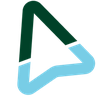
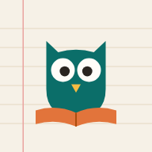

<!doctype html>
<html lang="he" dir="rtl">
<head>
<meta charset="utf-8">
<meta name="viewport" content="width=device-width, initial-scale=1, viewport-fit=cover">
<title>הקורסים של ינשופים</title>
<meta name="description" content="מועדים, סיכומים, זום ומיילים של הקורסים בינשופים מחזור י״ב">
<meta name="robots" content="noindex">
<meta property="og:title" content="הקורסים של ינשופים">
<meta property="og:description" content="סיכומים, זום ומועדים במקום אחד">
<meta property="og:type" content="website">
<meta property="og:url" content="https://dvir12010-source.github.io/yanshufim/">
<meta property="og:image" content="https://dvir12010-source.github.io/yanshufim/og.png">
<meta property="og:image:width" content="1200">
<meta property="og:image:height" content="630">
<meta name="twitter:card" content="summary_large_image">
<meta name="theme-color" content="#f6f1e7">
<meta name="color-scheme" content="light">
<meta name="claude:viewport-fit-sides" content="cover">
<link rel="manifest" href="manifest.webmanifest">
<link rel="icon" type="image/png" sizes="192x192" href="icon-192.png">
<link rel="apple-touch-icon" href="icon-192.png">
<meta name="apple-mobile-web-app-capable" content="yes">
<meta name="apple-mobile-web-app-title" content="ינשופים">
<link rel="preconnect" href="https://fonts.googleapis.com">
<link rel="stylesheet" href="https://fonts.googleapis.com/css2?family=Assistant:wght@400;600;700&family=Gveret+Levin&family=Karantina:wght@400;700&family=Rubik:wght@500;700&family=Suez+One&display=swap">
<style>
@font-face { font-family: "Tel Aviv Modernist"; src: url(fonts/telaviv-modernistregular.woff2) format("woff2"); font-weight: 400; font-display: swap; }
@font-face { font-family: "Tel Aviv Modernist"; src: url(fonts/telaviv-modernistbold.woff2) format("woff2"); font-weight: 700; font-display: swap; }
/* Layout: a student's notebook. Warm paper with grain, white sheets laid over it, one solid color per course. Phone is one column; desktop puts the side column next to the main one. */
:root {
  color-scheme: light;
  --course: #0b6e69; --on-course: #ffffff;
  --bg: #f6f1e7; --surface: #fffdf8; --fg: #2a2520; --muted: #6b6256; --line: #e6dece;
  --due: #a84b0b; --pdf: #c8372d;
  --path: #f6bb42; --on-path: #2b1d00; --path-step: #fde7b5; --path-next: #ffffff; --work: #e2743b;
  --soft: color-mix(in srgb, var(--course) 10%, var(--surface));
  --sheet: 0 1px 0 rgba(90,70,40,.08), 0 10px 22px -16px rgba(90,70,40,.35);
  --display: "Suez One", "Assistant", serif;
  --title: "Tel Aviv Modernist", "Rubik", "Assistant", Arial, sans-serif;
  --hand: "Gveret Levin", "Assistant", cursive;
  --body: "Assistant", Arial, sans-serif;
  --grain: url("data:image/svg+xml;utf8,<svg xmlns='http://www.w3.org/2000/svg' width='300' height='300'><filter id='n'><feTurbulence type='fractalNoise' baseFrequency='.9' numOctaves='2' stitchTiles='stitch'/><feColorMatrix values='0 0 0 0 .55 0 0 0 0 .45 0 0 0 0 .38 0 0 0 .5 0'/></filter><rect width='100%' height='100%' filter='url(%23n)'/></svg>");
}
* { box-sizing: border-box; }
html { -webkit-text-size-adjust: 100%; background: var(--bg); }
body { margin: 0; color: var(--fg); font-family: var(--body); font-size: 17px; line-height: 1.5; }
body::before { content: ""; position: fixed; inset: 0; z-index: -1; background: var(--grain); opacity: .32; pointer-events: none; }
a { color: inherit; }
button { font-family: inherit; }
[hidden] { display: none !important; }
.sr { position: absolute; width: 1px; height: 1px; overflow: hidden; clip: rect(0 0 0 0); white-space: nowrap; }
:focus-visible { outline: 3px solid var(--due); outline-offset: 2px; }
.wrap { max-width: 1040px; margin-inline: auto; padding-left: max(16px, env(safe-area-inset-left, 0px)); padding-right: max(16px, env(safe-area-inset-right, 0px)); }
.icon { fill: none; stroke: currentColor; stroke-width: 1.6; stroke-linecap: round; stroke-linejoin: round; }

.bar { position: sticky; top: 0; z-index: 20; background: var(--bg); padding-top: env(safe-area-inset-top, 0px); }
.bar.tinted { background: var(--course); color: var(--on-course); }
.owl-mark { flex: none; }
.bar.tinted .owl-mark { box-sizing: content-box; padding: 2px; border-radius: 8px; background: #fffdf8; }
.bar .wrap { display: flex; align-items: center; gap: 8px; min-height: 56px; }
.menu-btn { width: 46px; height: 46px; display: grid; place-items: center; background: none; border: 0; color: inherit; cursor: pointer; border-radius: 10px; }
.bar-title { display: flex; align-items: center; gap: 8px; font-family: var(--display); font-size: 19px; text-decoration: none; white-space: nowrap; overflow: hidden; text-overflow: ellipsis; min-width: 0; }

.scrim { position: fixed; inset: 0; z-index: 30; background: rgba(40,30,20,.45); }
.drawer { position: fixed; top: 0; bottom: 0; right: 0; z-index: 31; width: min(320px, 86vw); background: var(--surface); padding: calc(env(safe-area-inset-top, 0px) + 14px) 14px 20px; overflow-y: auto; display: grid; align-content: start; gap: 4px; }
.drawer a { display: flex; align-items: center; gap: 12px; min-height: 48px; padding: 6px 10px; border-radius: 10px; font-weight: 600; text-decoration: none; color: var(--fg); font-size: 17px; }
.drawer a[aria-current="page"] { background: var(--soft); }
.drawer .icon-chip { width: 34px; height: 34px; border-radius: 9px; background: var(--c); color: #fff; display: grid; place-items: center; flex: none; }
.drawer small { margin-inline-start: auto; color: var(--muted); font-weight: 400; }
.drawer hr { width: 100%; border: 0; border-top: 1px solid var(--line); margin: 8px 0; }
.drawer-head { display: flex; align-items: center; gap: 10px; padding: 4px 10px 12px; margin-bottom: 4px; border-bottom: 1px solid var(--line); color: #0b6a7a; }
.drawer-head b { font-family: var(--display); font-weight: 400; font-size: 22px; color: var(--fg); }
.d-group { display: flex; align-items: center; gap: 8px; margin: 16px 10px 4px; font-family: var(--title); font-size: 13px; font-weight: 700; letter-spacing: .04em; line-height: 1; color: var(--muted); }
.d-files { padding-top: 14px; border-top: 1px solid var(--line); margin-top: 16px; }
.drawer a.d-file { min-height: 40px; padding: 6px 10px 6px 6px; padding-inline-start: 26px; font-size: 15px; font-weight: 600; gap: 10px; line-height: 1.25; }
.drawer a.d-file:hover, .d-course summary:hover { background: var(--soft); }
.d-course summary { display: flex; align-items: center; gap: 10px; min-height: 44px; padding: 6px 10px; border-radius: 10px; font-weight: 700; cursor: pointer; list-style: none; }
.d-course summary::-webkit-details-marker { display: none; }
.d-course summary::after { content: "+"; margin-inline-start: 8px; font-size: 20px; line-height: 1; color: var(--muted); }
.d-course[open] summary::after { content: "−"; }
.d-course summary small { margin-inline-start: auto; color: var(--muted); font-weight: 400; }
.d-course .dot { width: 12px; height: 12px; border-radius: 50%; background: var(--c); flex: none; }
.f-pdf, .f-kind { flex: none; display: grid; place-items: center; min-width: 34px; height: 20px; padding: 0 5px; border-radius: 5px; font-size: 11px; font-weight: 700; }
.f-pdf { background: var(--pdf); color: #fff; }
.f-kind { background: color-mix(in srgb, var(--c) 14%, var(--surface)); color: var(--c); }

.band { background: var(--course); color: var(--on-course); }
.band .wrap { position: relative; padding-block: 8px 24px; display: grid; gap: 12px; }
.band-icon { position: absolute; inset-inline-end: 16px; top: 2px; width: 58px; height: 58px; opacity: .85; }
h1 { font-family: var(--display); font-weight: 400; font-size: clamp(28px, 7vw, 40px); line-height: 1.15; margin: 0; padding-inline-end: 70px; text-wrap: balance; }
.sub { margin: 0; font-size: 17px; padding-inline-end: 70px; }
.sub.hours { display: inline-flex; justify-self: start; padding-inline-end: 14px; align-items: center; gap: 8px; min-height: 38px; padding: 4px 14px; border-radius: 10px; background: rgba(255,255,255,.18); font-weight: 700; font-size: 18px; }
.actions { display: flex; flex-wrap: wrap; gap: 10px; }
.btn { display: inline-flex; align-items: center; justify-content: center; min-height: 46px; padding: 8px 18px; border-radius: 12px; font: 700 16px var(--body); text-decoration: none; border: 0; cursor: pointer; background: #ffffff; color: var(--fg); }
.readers { display: grid; grid-template-columns: repeat(auto-fit, minmax(96px, 1fr)); gap: 10px; margin-top: 4px; }
.reader { position: relative; display: grid; gap: 0; padding: 12px 14px 12px; min-height: 92px; align-content: end; text-decoration: none; color: var(--fg);
  background: #fffdf8; border-radius: 4px 4px 4px 4px; box-shadow: 0 2px 0 rgba(0,0,0,.08), 0 14px 22px -14px rgba(0,0,0,.55);
  transition: transform .15s; }
.reader::after { content: ""; position: absolute; top: 0; right: 0; width: 22px; height: 22px; background: linear-gradient(225deg, var(--course) 50%, color-mix(in srgb, var(--course) 30%, #e9dfcc) 50%); border-bottom-left-radius: 3px; }
.reader:active { transform: translateY(1px) scale(.98); }
.reader small { font-size: 13px; color: var(--muted); line-height: 1.2; }
.reader b { font-family: var(--display); font-weight: 400; font-size: 24px; line-height: 1.15; color: var(--course); }
.reader span { font-size: 13px; color: var(--muted); }
.btn.ghost { background: transparent; color: var(--on-course); box-shadow: inset 0 0 0 1.5px rgba(255,255,255,.65); }
.live { display: flex; flex-wrap: wrap; align-items: center; justify-content: space-between; gap: 8px 14px; padding: 12px 14px; border-radius: 12px; background: var(--surface); color: var(--fg); box-shadow: var(--sheet); }
.live b { font-family: var(--title); font-weight: 700; font-size: 18px; }
.live .btn { background: var(--course); color: var(--on-course); }

main.wrap { padding-block: 22px 40px; display: grid; gap: 30px; }
.cols { display: grid; gap: 30px; min-width: 0; }
.col { display: grid; gap: 30px; align-content: start; min-width: 0; }
section { display: grid; gap: 12px; min-width: 0; align-content: start; }
h2 { font-family: var(--display); font-weight: 400; font-size: 23px; margin: 0; }
.lead { margin: 0; color: var(--muted); }
.note { margin: 0; color: var(--muted); }

.tiles { display: grid; grid-template-columns: repeat(6, minmax(0,1fr)); gap: 12px; }
.tile-group { display: contents; }

.tile { position: relative; display: grid; gap: 4px; justify-items: center; align-content: center; padding: 14px 10px; min-height: 136px; border-radius: 14px; text-align: center; text-decoration: none; background: var(--c); color: #ffffff; box-shadow: var(--sheet); transition: transform .15s; }
.tile { grid-column: span var(--span, 3); }
.tile:hover { transform: translateY(-2px); }
.tile.narrow { padding-inline: 6px; }
.tile.narrow b { font-size: 18px; }
.tile svg { width: 32px; height: 32px; }
.tile b { font-family: var(--title); font-weight: 700; font-size: 21px; line-height: 1.2; text-wrap: balance; }
.tile span { font-size: 15px; font-weight: 600; }
/* object tiles: every course is a real object, same light, same shadow, name on its face */
.tile-obj { background: none; box-shadow: none; padding: 0; color: #3a332b; }
.tile-obj:hover { transform: none; }
.tile-obj .thing { position: relative; display: grid; place-items: center; width: 100%; max-width: 156px; margin-inline: auto; aspect-ratio: 1; container-type: inline-size;
  transform: scale(var(--k, 1)); filter: drop-shadow(0 3px 2px rgba(40,30,20,.35)) drop-shadow(0 10px 12px rgba(40,30,20,.22)); transition: transform .25s; }
.tile-obj .thing svg { position: absolute; inset: 0; width: 100%; height: 100%; overflow: visible; }
.tile-obj .lab { position: relative; display: grid; justify-items: center; line-height: .95; font-family: "Karantina", var(--title); font-weight: 700; }
.tile-obj .lab small, .tile-obj .lab b, .tile.narrow .lab b { font-family: "Karantina", var(--title); font-weight: 700; line-height: .95; }
.tile-obj .lab small { font-size: 12.9cqw; opacity: .9; }
.tile-obj .lab b, .tile.narrow .lab b { font-size: 20cqw; }
.tile-obj .obj-when { font-size: 15px; font-weight: 700; color: var(--muted); }
.tile-obj:hover .thing, .tile-obj:focus-visible .thing { transform: scale(calc(var(--k, 1) * 1.05)); }
/* Each object does its own thing while the mouse is on it, and stops when it leaves (desktop) */
.thing svg g[class^="a-"] { transform-box: view-box; }
.tile-obj.t-change .thing svg { animation: a-spin 5s linear infinite paused; }
.tile-obj.t-change:hover .thing svg { animation-play-state: running; }
@keyframes a-spin { to { transform: rotate(360deg); } }
.a-needle { transform-origin: 50px 54px; }
.tile-obj:hover .a-needle { animation: a-seek 2.2s ease-in-out infinite; }
@keyframes a-seek { 0%,100% { transform: rotate(0); } 18% { transform: rotate(38deg); } 40% { transform: rotate(-26deg); } 60% { transform: rotate(14deg); } 78% { transform: rotate(-6deg); } }
.a-shine { opacity: 0; }
.tile-obj:hover .a-shine { animation: a-swipe 1.6s ease-in-out infinite; }
@keyframes a-swipe { 0% { opacity: .9; transform: translateX(0); } 70%,100% { opacity: .9; transform: translateX(150px); } }
.a-eyes { transform-origin: 50px 44px; }
.tile-obj:hover .a-eyes { animation: a-blink 2.4s infinite; }
@keyframes a-blink { 0%,40%,48%,62%,70%,100% { transform: scaleY(1); } 44%,66% { transform: scaleY(.1); } }
.tile-obj:hover .a-pod { animation: a-glow .8s ease-in-out infinite alternate; }
@keyframes a-glow { from { opacity: 1; } to { opacity: .25; } }
/* Gavel: one knock on the middle of the block (Dvir 23/11). The wrist (handle end) is the pivot; a positive turn lifts the head.
   A slow lift, a short hold, a strike that speeds up and stops on the block, a tiny bounce. At the hit the object dips a hair
   and the sound lines burst once. It plays once when the home screen opens (phones have no hover) and again on mouse-over;
   seatObjects() adds the .knock class. All three share one 1.2s clock */
.a-gavel { transform-origin: 93px 30.5px; translate: 2.7px 0; }
.t-labor.knock .a-gavel { animation: a-knock 1.2s linear 1; }
@keyframes a-knock {
  0% { transform: rotate(0); animation-timing-function: cubic-bezier(.22,.61,.36,1); }
  38% { transform: rotate(13deg); animation-timing-function: ease-in-out; }
  46% { transform: rotate(13.6deg); animation-timing-function: cubic-bezier(.55,.06,.68,.19); }
  56% { transform: rotate(0); animation-timing-function: cubic-bezier(.22,.61,.36,1); }
  62% { transform: rotate(1.2deg); animation-timing-function: cubic-bezier(.55,.06,.68,.19); }
  68%, 100% { transform: rotate(0); }
}
.t-labor.knock .thing { animation: a-jolt 1.2s linear 1; }
@keyframes a-jolt { 0%, 55.9%, 61%, 100% { translate: 0 0; } 57% { translate: 0 .7px; } }
.a-hit { opacity: 0; transform-origin: 50px 60px; }
.t-labor.knock .a-hit { animation: a-hit 1.2s linear 1; }
@keyframes a-hit {
  0%, 55.9% { opacity: 0; transform: scale(.85); }
  56.5% { opacity: .9; transform: scale(1); }
  78%, 100% { opacity: 0; transform: scale(1.2); }
}
.a-spark { opacity: 0; transform-box: fill-box !important; transform-origin: center; }
.tile-obj:hover .a-spark { animation: a-twinkle 1.4s ease-in-out infinite; }
.tile-obj:hover .a-spark.b { animation-delay: .7s; }
@keyframes a-twinkle { 0%,100% { opacity: 0; transform: scale(.2) rotate(0); } 50% { opacity: 1; transform: scale(1) rotate(45deg); } }
.a-ring { transform-origin: 50px 56px; }
.tile-obj:hover .a-ring { animation: a-sway 2.8s ease-in-out infinite; }
@keyframes a-sway { 0%,100% { transform: rotate(0); } 25% { transform: rotate(-5deg); } 75% { transform: rotate(5deg); } }
.tile-obj:hover :is(.a-p1, .a-p2, .a-p3, .a-p4) { animation: a-nod 2s ease-in-out infinite; }
.tile-obj:hover .a-p2 { animation-delay: .5s; }
.tile-obj:hover .a-p3 { animation-delay: 1s; }
.tile-obj:hover .a-p4 { animation-delay: 1.5s; }
@keyframes a-nod { 0%,30%,100% { transform: translateY(0); } 10% { transform: translateY(-3px); } 20% { transform: translateY(0); } }
.tile-obj:hover .a-pencil { animation: a-write .7s ease-in-out infinite alternate; }
@keyframes a-write { from { transform: translate(0, 0); } to { transform: translate(-7px, 1.5px); } }
@media (prefers-reduced-motion: reduce) { .tile-obj .thing, .tile-obj .thing svg, .thing svg * { transition: none !important; animation: none !important; } }
.tile .fresh { position: absolute; top: 8px; inset-inline-end: 8px; padding: 1px 8px; border-radius: 99px; background: var(--surface); color: var(--fg); font-size: 13px; font-weight: 700; }

.list { display: grid; gap: 10px; }
.soon { display: grid; grid-template-columns: 74px minmax(0,1fr); background: var(--surface); border-radius: 12px; overflow: hidden; text-decoration: none; box-shadow: var(--sheet); }
.when { display: grid; justify-items: center; align-content: center; padding: 10px 4px; background: var(--c); color: #ffffff; font-variant-numeric: tabular-nums; }
.when strong { font-family: var(--title); font-weight: 700; font-size: 20px; line-height: 1.2; }
.when span { font-size: 15px; font-weight: 600; line-height: 1.2; white-space: nowrap; }
.soon-body { padding: 10px 14px; min-width: 0; display: grid; gap: 1px; align-content: center; }
.soon p { margin: 0; }
.soon-course { font-size: 15px; color: var(--muted); }
.soon-title { font-weight: 700; line-height: 1.3; }
.soon-note { font-size: 15px; color: var(--muted); }
.soft-tag { display: inline-block; margin-inline-start: 6px; padding: 0 8px; border-radius: 99px; font-size: 14px; font-weight: 700; color: var(--due); box-shadow: inset 0 0 0 1px currentColor; }
.cal { justify-self: start; display: inline-flex; align-items: center; gap: 6px; min-height: 36px; font-weight: 700; font-size: 15px; color: var(--due); }
.extra a { display: flex; align-items: center; justify-content: space-between; min-height: 48px; padding: 8px 14px; border-top: 1px solid var(--line); font-weight: 700; text-decoration: none; }
.extra a:first-child { border-top: 0; }
.extra a::after { content: "←"; color: var(--muted); }

.tasks { display: grid; }
.task { display: grid; grid-template-columns: minmax(0,1fr) auto; align-items: center; gap: 2px 12px; padding: 12px 14px; border-top: 1px solid var(--line); border-inline-start: 6px solid var(--c); text-decoration: none; color: var(--fg); }
.task:first-child { border-top: 0; }
.task small { font-size: 15px; font-weight: 700; color: var(--c); }
.task p { margin: 0; line-height: 1.35; }
.task-date { display: grid; justify-items: center; min-width: 54px; padding: 4px 6px; border-radius: 10px; background: var(--c); color: #fff; font-variant-numeric: tabular-nums; }
.task-date strong { font-family: var(--title); font-size: 18px; line-height: 1.2; }
.task-date span { font-size: 13px; font-weight: 600; white-space: nowrap; }
.task-here { display: grid; gap: 2px; padding: 12px 14px; border-radius: 12px; background: var(--soft); }
.task-here small { font-size: 15px; font-weight: 700; color: var(--course); }
.task-here p { margin: 0; font-weight: 600; }
.task { grid-template-columns: 44px minmax(0,1fr) auto; }
.task-tick { width: 44px; height: 44px; border-radius: 50%; border: 2px solid var(--c); background: transparent; cursor: pointer; }
.task-tick:hover { background: color-mix(in srgb, var(--c) 15%, transparent); }
.task-course { justify-self: start; font-size: 15px; font-weight: 700; color: var(--c); text-decoration: none; }
.task-link { color: inherit; text-decoration: underline; text-decoration-color: color-mix(in srgb, currentColor 35%, transparent); text-underline-offset: 3px; }
.undo { justify-self: start; min-height: 44px; padding: 0 2px; background: none; border: 0; color: var(--muted); font: 600 15px var(--body); text-decoration: underline; cursor: pointer; }
/* Course page built around a weekly assignment rail (layout "rail"): light top, one row of numbered nodes, Lemida chip on the left above it */
.feat { align-items: start; padding-block: 14px; }
.feat .task-tick { margin-top: 2px; }
.feat-title { font-family: var(--title); font-weight: 700; font-size: 19px; line-height: 1.25; }
.feat-status { display: inline-block; margin-top: 4px; padding: 1px 9px; border-radius: 999px; background: var(--soft); color: var(--c); font-size: 13.5px; font-weight: 700; }
.feat .task-how { margin: 6px 0 0; }
.feat-video { display: inline-flex; align-items: center; gap: 8px; margin-top: 10px; min-height: 44px; padding: 6px 16px 6px 14px; border-radius: 12px; background: var(--c); color: #fff; font-weight: 700; text-decoration: none; }
.minis { display: flex; gap: 0; margin: 2px 0 -6px -6px; }
.mini { display: grid; place-items: center; width: 44px; height: 44px; color: var(--c); text-decoration: none; }
.mini i { display: grid; place-items: center; width: 32px; height: 32px; border-radius: 50%; background: var(--soft); font-style: normal; font-size: 17px; font-weight: 700; line-height: 1; }
.mini-pdf { display: grid; place-items: center; height: 15px; padding: 0 3px; border-radius: 3px; background: var(--pdf); color: #fff; font-size: 8.5px; font-weight: 700; letter-spacing: .2px; }
.feat-submit { display: block; margin-top: 10px; font-weight: 700; color: var(--c); text-decoration: underline; text-underline-offset: 4px; }
.file-row { display: flex; align-items: center; gap: 14px; min-height: 60px; padding: 8px 14px; border-top: 1px solid var(--line); color: var(--fg); font-weight: 600; text-decoration: none; }
.file-row:first-child { border-top: 0; }
.tool-ico { display: grid; place-items: center; width: 28px; height: 34px; border-radius: 6px; background: var(--soft); color: var(--course); flex: none; }
.pdf-ico.sm { width: 28px; height: 34px; padding-bottom: 4px; font-size: 9px; flex: none; }
.pdf-ico.sm::before { width: 10px; height: 10px; }
.pdf-chip { display: grid; justify-items: center; gap: 4px; width: 68px; padding: 8px 4px; border-radius: 12px; text-decoration: none; color: var(--fg); font-size: 13px; font-weight: 700; line-height: 1.15; text-align: center; background: var(--surface); box-shadow: inset 0 0 0 1.5px var(--line); }
.pdf-ico { position: relative; display: grid; place-items: end center; width: 34px; height: 42px; padding-bottom: 6px; border-radius: 4px 12px 4px 4px; background: var(--pdf); color: #fff; font-size: 11px; letter-spacing: .3px; }
.pdf-ico::before { content: ""; position: absolute; top: 0; inset-inline-end: 0; width: 12px; height: 12px; background: linear-gradient(225deg, var(--surface) 50%, rgba(0,0,0,.22) 50%); border-bottom-left-radius: 4px; }
.task-how { font-size: 15px; font-weight: 400; color: var(--muted); }
.task-how b { color: var(--fg); }
.rail-top { padding: 6px 0 18px; background: linear-gradient(180deg, var(--soft), var(--bg)); }
.rail-top .wrap { display: grid; gap: 4px; }
.rail-top h1 { padding-inline-end: 0; color: var(--course); font-size: clamp(28px, 7vw, 40px); }
.rail-top .sub { padding-inline-end: 0; color: var(--muted); }
.lemida-chip { display: flex; justify-content: flex-end; }
.lemida-chip a { display: inline-flex; align-items: center; gap: 8px; min-height: 44px; padding: 4px 14px 4px 12px; border-radius: 12px; background: var(--surface); box-shadow: var(--sheet), inset 0 0 0 1.5px var(--course); color: var(--course); font-weight: 700; font-size: 16px; text-decoration: none; }
.lemida-chip img { flex: none; }
.rail { position: relative; display: flex; align-items: center; margin: 18px 0 4px; }
.rail::before { content: ""; position: absolute; inset: 50% 10px auto 10px; height: 3px; background: var(--line); transform: translateY(-50%); }
.rail .n { flex: 1; position: relative; display: grid; place-items: center; }
.rail .n i { font-style: normal; width: 30px; height: 30px; border-radius: 50%; background: var(--surface); border: 2px solid var(--line); display: grid; place-items: center; font: 700 14px var(--body); color: var(--muted); }
.rail .n.open i { border-color: var(--course); color: var(--course); }
.rail .n.done i { background: var(--course); border-color: var(--course); color: var(--on-course); }
.rail .n.now i { width: 40px; height: 40px; font-size: 18px; background: #fff; border: 3px solid var(--course); color: var(--course); box-shadow: 0 0 0 6px color-mix(in srgb, var(--course) 18%, transparent); }
.rail-cap { display: flex; justify-content: space-between; font-size: 13px; color: var(--muted); padding: 0 4px; }
.now-btn { display: flex; align-items: center; gap: 14px; min-height: 72px; padding: 12px 16px; border-radius: 18px; background: #fff; box-shadow: var(--sheet), inset 0 0 0 2.5px var(--course); text-decoration: none; color: var(--course); }
.now-btn b { font-family: var(--display); font-weight: 400; font-size: 23px; line-height: 1.1; display: block; }
.now-btn span { font-size: 14px; color: var(--muted); }
.now-btn em { margin-inline-start: auto; font-style: normal; font-size: 26px; }
.grade-big { display: flex; height: 46px; border-radius: 12px; overflow: hidden; font-weight: 700; color: #fff; }
.grade-big span { display: flex; align-items: center; justify-content: center; }
.ta-box { display: grid; gap: 8px; padding: 14px; }
.ta-box small { color: var(--muted); font-size: 14px; }
.ta-row { display: flex; gap: 8px; }
.ta-row input { flex: 1; min-width: 0; height: 46px; border: 1.5px solid var(--line); border-radius: 10px; padding: 0 12px; font: 16px var(--body); background: #fff; direction: ltr; text-align: right; }
.ta-row button, .ta-row a { height: 46px; padding: 0 16px; border: 0; border-radius: 10px; background: var(--course); color: var(--on-course); font: 700 16px var(--body); display: inline-flex; align-items: center; cursor: pointer; text-decoration: none; }
.ta-row .ghost-btn { background: transparent; color: var(--course); box-shadow: inset 0 0 0 1.5px var(--course); }
.ta-mail { font: 700 17px var(--body); direction: ltr; text-align: right; word-break: break-all; }
.sheet { background: var(--surface); border-radius: 12px; box-shadow: var(--sheet); overflow: hidden; }
.lesson { display: grid; gap: 8px; padding: 14px; border-top: 1px solid var(--line); }
.lesson:first-child { border-top: 0; }
.lesson-head { margin: 0; color: var(--muted); font-size: 15px; font-variant-numeric: tabular-nums; }
.topic { margin: 0; font-weight: 600; line-height: 1.35; }
.links { display: flex; flex-wrap: wrap; gap: 8px; min-width: 0; }
.chip { display: inline-flex; align-items: center; min-height: 44px; padding: 2px 16px; border-radius: 10px; font-weight: 700; font-size: 16px; text-decoration: none; background: var(--course); color: var(--on-course); }
.ask { font-weight: 700; font-size: 15px; color: var(--due); }
details.fold > summary { min-height: 48px; display: flex; align-items: center; justify-content: space-between; gap: 10px; padding: 8px 14px; font-weight: 700; cursor: pointer; list-style: none; }
details.fold > summary::-webkit-details-marker { display: none; }
details.fold > summary::after { content: "+"; font-family: var(--title); font-size: 22px; line-height: 1; color: var(--muted); }
details.fold[open] > summary::after { content: "−"; }
.older { margin-top: 10px; }
.older > summary { color: var(--course); }

.mail { display: grid; gap: 2px; padding: 12px 14px; }
.mail-row { display: flex; flex-wrap: wrap; align-items: center; justify-content: space-between; gap: 0 12px; }
.mail b { direction: ltr; unicode-bidi: isolate; user-select: all; overflow-wrap: anywhere; }
.mail-acts { display: flex; align-items: center; gap: 4px 14px; flex-wrap: wrap; }
.gmail { display: inline-flex; align-items: center; min-height: 44px; padding: 2px 16px; border-radius: 10px; font: 700 15px var(--body); text-decoration: none; background: var(--course); color: var(--on-course); }
.copy { font: 700 15px var(--body); color: var(--due); background: none; border: 0; text-decoration: underline; cursor: pointer; min-height: 44px; padding: 0 2px; }
.mail small { font-size: 15px; color: var(--muted); }

.path { background: var(--path); color: var(--on-path); border-radius: 12px; box-shadow: var(--sheet); }
.path > summary::after { color: var(--on-path); }
.path-inner { padding: 0 12px 14px; display: grid; gap: 8px; }
.path-count { font-weight: 600; font-size: 15px; margin: 0; }
.steps { list-style: none; margin: 0; padding: 0; display: grid; gap: 8px; }
.step { display: grid; grid-template-columns: 46px minmax(0,1fr) auto; gap: 12px; align-items: center; padding: 8px 12px 8px 14px; border-radius: 12px; background: var(--path-step); }
.step.next-step { background: var(--path-next); box-shadow: 0 0 0 2px var(--on-path); }
.step.done { background: transparent; box-shadow: inset 0 0 0 1px var(--on-path); }
.step.done .step-title { text-decoration: line-through; }
.tick { width: 46px; height: 46px; border-radius: 50%; border: 2px solid var(--on-path); background: transparent; color: var(--on-path); font-family: var(--title); font-weight: 700; font-size: 18px; line-height: 1; cursor: pointer; font-variant-numeric: tabular-nums; }
.step.done .tick { background: var(--on-path); color: var(--path); }
.step-title { margin: 0; font-weight: 700; line-height: 1.3; }
.step-note { margin: 0; font-size: 15px; }
.step-date { display: grid; justify-items: center; min-width: 60px; min-height: 44px; align-content: center; text-decoration: none; font-variant-numeric: tabular-nums; }
.step-date strong { font-family: var(--title); font-weight: 700; font-size: 17px; line-height: 1.2; }
.step-date span { font-size: 14px; }
.step-date u { display: inline-flex; align-items: center; gap: 3px; font-size: 14px; font-weight: 700; text-decoration: none; }

.rec-next { display: grid; gap: 2px; padding: 12px 14px; border-radius: 12px; background: var(--soft); color: var(--fg); text-decoration: none; font-weight: 700; }
.rec-next small { font-size: 15px; font-weight: 600; color: var(--muted); }
.rec-unit { margin: 0; padding: 14px 14px 0; font-weight: 700; color: var(--course); }
.rec { display: grid; grid-template-columns: 46px minmax(0,1fr); gap: 12px; align-items: center; padding: 10px 14px; }
.rec-tick { width: 46px; height: 46px; border-radius: 50%; border: 2px solid var(--course); background: transparent; color: var(--course); font-family: var(--title); font-weight: 700; font-size: 18px; line-height: 1; cursor: pointer; font-variant-numeric: tabular-nums; }
.rec.done .rec-tick { background: var(--course); color: var(--on-course); }
.rec a { display: block; color: var(--fg); text-decoration: none; }
.rec a b { display: block; line-height: 1.3; text-decoration: underline; text-underline-offset: 3px; }
.rec.done a b { color: var(--muted); }
.rec a span { display: block; font-size: 15px; color: var(--muted); }
.rec-extra { display: flex; flex-wrap: wrap; gap: 4px 16px; padding: 4px 14px 14px; }
.rec-extra a { min-height: 44px; display: inline-flex; align-items: center; font-size: 15px; font-weight: 600; color: var(--muted); }
.faq { display: grid; gap: 8px; }
.faq .a { padding: 0 14px 14px; }
.faq .a p { margin: 0; }
.grade { display: grid; grid-template-columns: var(--a) var(--b); margin-top: 10px; border-radius: 8px; overflow: hidden; font-weight: 700; font-size: 15px; }
.grade span { padding: 4px 10px; white-space: nowrap; }
.grade .g1 { background: var(--course); color: var(--on-course); }
.grade .g2 { background: var(--work); color: #2b1d00; }

.hold { padding: 14px; background: var(--surface); border-radius: 12px; box-shadow: var(--sheet); }
.hold b { font-family: var(--hand); font-size: 26px; font-weight: 400; display: block; line-height: 1.2; color: var(--course); }
.hold p { margin: 0; }

.pick { display: grid; gap: 8px; }
.pick label { display: flex; align-items: center; gap: 12px; min-height: 52px; padding: 8px 14px; background: var(--surface); border-radius: 12px; box-shadow: var(--sheet); font-weight: 600; cursor: pointer; }
.pick input { width: 22px; height: 22px; accent-color: #0b6e69; }

footer { color: var(--muted); font-size: 15px; }
.stamp { color: var(--muted); font-size: 14px; margin: 0 0 6px; }
.install { display: flex; align-items: center; justify-content: center; gap: 10px; min-height: 52px; padding: 8px 14px; border-radius: 12px; background: var(--surface); box-shadow: var(--sheet); color: var(--fg); font-weight: 700; text-decoration: none; }
.install svg { color: #0b6a7a; }
.help { position: fixed; left: 16px; right: 16px; bottom: calc(env(safe-area-inset-bottom, 0px) + 16px); z-index: 32; max-width: 420px; margin-inline: auto; padding: 18px; border-radius: 16px; background: var(--surface); display: grid; gap: 10px; }
.help h2 { font-size: 21px; }
.help ol { margin: 0; padding-inline-start: 22px; display: grid; gap: 4px; }
.help .btn { background: #0b6a7a; color: #fff; }
.standalone [data-install] { display: none; }

/* Phone: three small tiles a row, so the list of what to hand in starts on the first screen */
@media (max-width: 859px) {
  .tiles { gap: 8px; }
  .tile, .tile.row-start { grid-column: span 2; min-height: 84px; padding: 10px 4px; gap: 2px; border-radius: 12px; }
  .tile svg { width: 24px; height: 24px; }
  .tile b, .tile.narrow b { font-size: 16px; }
  .tile span { display: none; }
  .tile.tile-obj { padding: 0; }
  .tile-obj .thing { max-width: 100px; }
  .tile-obj span.thing, .tile-obj span.lab { display: grid; }
  .tile .fresh { display: block; top: -7px; inset-inline-end: 4px; padding: 0 6px; font-size: 11px; box-shadow: var(--sheet); }
}
@media (min-width: 860px) {
  [data-install] { display: none; }
  .tiles { grid-template-columns: minmax(0,1fr); }
  .tile-group { display: grid; grid-template-columns: repeat(6, minmax(0,1fr)); gap: 12px; align-items: center; }
  .tile { min-height: 156px; }
  .tile.row-start { grid-column: 1 / span var(--span, 3); }
  .tile.narrow b { font-size: 21px; }
  .tile b { font-size: 25px; }
  .tile span { font-size: 16px; }
  .home-cols { grid-template-columns: minmax(0,1fr) 340px; }
  .course-cols { grid-template-columns: minmax(0,1fr) 360px; }
}

/* Home "what to hand in": one wooden board (framed, like a notice board) with a paper note pinned for each task.
   The text stays on light paper so it reads well; the pin carries the course color. Home only, course pages keep their list */
.board { overflow: visible; gap: 12px; padding: 18px 14px 16px; border-radius: 10px;
  background: repeating-linear-gradient(90deg, rgba(255,255,255,.05) 0 2px, rgba(60,35,10,.04) 2px 6px), linear-gradient(#d9b07a, #c4935a);
  box-shadow: inset 0 0 0 7px #8f5d2e, inset 0 0 0 9px rgba(50,28,8,.25), inset 0 3px 8px 9px rgba(50,28,8,.18), var(--sheet); }
/* Each task is a note torn from a notebook: cream lined paper with a ragged top edge, a little narrower than the board and
   set left and right in turn, tilted, its bottom corner lifting. The paper is the ::after layer (so the torn edge can be cut
   with a mask without cutting the shadow, which the note casts as a whole); the pin is ::before */
.board .task { position: relative; border: 0; background: none; width: 93%; justify-self: start; padding-top: 22px; rotate: -.9deg;
  filter: drop-shadow(0 1px 1px rgba(40,25,10,.22)) drop-shadow(0 6px 5px rgba(40,25,10,.28)); }
.board .task:nth-of-type(even) { justify-self: end; rotate: .8deg; }
.board .task:nth-of-type(3n) { rotate: -.35deg; }
.board .task::after { content: ""; position: absolute; inset: 0; z-index: -1; border-radius: 0 0 3px 3px;
  background:
    linear-gradient(to top right, rgba(90,60,20,.10), rgba(90,60,20,0) 16%),
    repeating-linear-gradient(to bottom, transparent 0 25px, rgba(70,120,185,.20) 25px 26px) 0 12px / 100% calc(100% - 20px) no-repeat,
    #fff9ec;
  -webkit-mask: linear-gradient(#000 0 0) 0 6px / 100% calc(100% - 6px) no-repeat, conic-gradient(from 135deg at 50% 0, #000 90deg, #0000 0) 0 0 / 9px 6px repeat-x;
  mask: linear-gradient(#000 0 0) 0 6px / 100% calc(100% - 6px) no-repeat, conic-gradient(from 135deg at 50% 0, #000 90deg, #0000 0) 0 0 / 9px 6px repeat-x; }
.board .task::before { content: ""; position: absolute; top: 8px; left: 50%; z-index: 1; width: 13px; height: 13px; margin-left: -6.5px; border-radius: 50%;
  background: radial-gradient(circle at 35% 30%, rgba(255,255,255,.75), rgba(255,255,255,0) 45%), var(--c); box-shadow: 0 2px 2px rgba(0,0,0,.35); }
@media (prefers-reduced-motion: reduce) { .board .task { rotate: none; } }
/* Shelves: one wooden shelf per kind of course, only as long as the courses on it. It is rebuilt from the courses each
   student picked, so adding or removing a course lengthens or shortens it, and a kind with no courses has no shelf.
   Each row stands on a board (top face + front edge); the kind is a brass plate hanging from the middle of the last board.
   seatObjects() lowers each object so its real bottom touches the board */
.tiles { grid-template-columns: minmax(0,1fr); gap: 8px; container-type: inline-size; }
.shelf { --row: 104px; --top: 6px; --front: 18px; --rg: 30px; --c1: 8px; --pad: 10px; --chain: 5px; --tag: 19px;
  --cell: calc((100cqw - 2 * var(--c1) - 2 * var(--pad)) / 3);
  position: relative; justify-self: center; display: grid; grid-template-columns: repeat(var(--cols, 3), var(--cell)); grid-auto-rows: var(--row);
  column-gap: var(--c1); row-gap: var(--rg); padding: 0 var(--pad) calc(var(--front) + var(--chain) + var(--tag) + 4px);
  background-image: linear-gradient(to bottom, transparent calc(var(--row) - var(--top)), #e6c48f calc(var(--row) - var(--top)), #d2a46a var(--row),
    #a5713c var(--row), #7e5126 calc(var(--row) + var(--front)), rgba(70,45,15,.22) calc(var(--row) + var(--front)), transparent calc(var(--row) + var(--front) + 7px));
  background-size: 100% calc(var(--row) + var(--rg)); background-repeat: repeat-y; }
.shelf .tile, .shelf .tile.row-start { grid-column: auto; align-self: end; }
.shelf .tile-obj { min-height: 0; padding: 0; gap: 0; align-content: end; margin-bottom: calc(var(--top) / 2); }
.shelf .tile-obj .thing { transform-origin: 50% 100%; transform: translateY(var(--drop, 0%)) scale(var(--k, 1));
  filter: drop-shadow(0 1px 1px rgba(40,25,10,.35)) drop-shadow(0 3px 4px rgba(40,25,10,.18)); }
.shelf .tile-obj:hover .thing, .shelf .tile-obj:focus-visible .thing { transform: translateY(var(--drop, 0%)) scale(calc(var(--k, 1) * 1.05)); }
.shelf .tile-obj .thing::after { content: ""; position: absolute; left: 50%; bottom: calc(var(--gap, 0) * 1% - 4%); width: calc(var(--w, 70) * 1%); height: 9%;
  transform: translateX(-50%); background: radial-gradient(closest-side, rgba(45,28,10,.38), rgba(45,28,10,0)); z-index: -1; }
/* A tilted card would stand on one corner; on the shelf it stands straight */
.shelf .t-micro .thing svg > g { transform: none; }
.shelf .t-micro .lab { translate: 12% 2%; }
.shelf-tag { position: absolute; bottom: 4px; left: 50%; transform: translateX(-50%); z-index: 1; display: flex; align-items: center; gap: 5px; height: var(--tag);
  padding: 0 9px; border-radius: 4px; background: linear-gradient(#f6e3a8, #c9a24a); color: #4a3510; font: 700 12px/1 var(--body);
  box-shadow: inset 0 1px 0 rgba(255,255,255,.7), 0 2px 3px rgba(40,25,10,.35); white-space: nowrap; }
.shelf-tag::before { content: ""; position: absolute; top: calc(-1 * var(--chain)); left: 12px; right: 12px; height: var(--chain); border-inline: 2px solid #6b4a22; }
.shelf-tag svg { width: 13px; height: 13px; fill: none; stroke: currentColor; stroke-width: 2.2; stroke-linecap: round; stroke-linejoin: round; }
@media (min-width: 860px) {
  .shelf { --row: 168px; --top: 8px; --front: 24px; --rg: 38px; --c1: 14px; --pad: 14px; --chain: 9px; --tag: 26px;
    --cell: min(196px, calc((100cqw - 2 * var(--c1) - 2 * var(--pad)) / 3)); }
  .shelf-tag { font-size: 14px; padding: 0 12px; gap: 6px; }
  .shelf-tag svg { width: 15px; height: 15px; }
  /* The class time is engraved on the board's front, right under the object */
  .shelf .tile-obj .obj-when { position: absolute; top: calc(100% + var(--top) / 2); left: 0; right: 0; height: var(--front); line-height: var(--front);
    font-size: 13px; color: #f7e9d2; text-shadow: 0 -1px 0 rgba(0,0,0,.4); }
}

/* Desktop: files from the site open as tabs inside it, like Chrome. The strip appears once a file is open */
/* Tabs run left to right like Dvir's Chrome: the page first on the left, then each file; icon, name, then × on the right */
.tabs { direction: ltr; position: sticky; top: 0; z-index: 40; display: flex; align-items: flex-end; gap: 2px; height: 42px; padding: 6px 10px 0; background: #e4dccb; overflow-x: auto; scrollbar-width: none; }
.tab { display: flex; align-items: center; gap: 8px; flex: 0 1 220px; min-width: 110px; height: 36px; padding: 0 12px 0 8px; border: 0; border-radius: 10px 10px 0 0; background: transparent; color: var(--muted); font: 700 14px var(--body); cursor: pointer; }
.tab:hover { background: rgba(255,255,255,.45); }
.tab[aria-selected="true"] { background: var(--surface); color: var(--fg); box-shadow: 0 -1px 0 rgba(90,70,40,.08); }
.tab .t-ico { flex: none; width: 18px; height: 18px; border-radius: 4px; }
.tab .t-pdf { display: grid; place-items: center; background: var(--pdf); color: #fff; font-size: 7px; letter-spacing: .2px; }
.tab .t-name { flex: 1; min-width: 0; overflow: hidden; white-space: nowrap; text-overflow: ellipsis; text-align: left; unicode-bidi: plaintext; }
.tab .t-x { flex: none; display: grid; place-items: center; width: 22px; height: 22px; border-radius: 50%; font-size: 16px; line-height: 1; color: var(--muted); }
.tab .t-x:hover { background: var(--line); color: var(--fg); }
.t-dl { flex: none; align-self: center; display: flex; align-items: center; gap: 6px; height: 30px; margin-left: auto; padding: 0 12px; border-radius: 15px; background: var(--fg); color: #fff; font: 700 13px var(--body); text-decoration: none; }
.t-dl svg { width: 16px; height: 16px; fill: none; stroke: currentColor; stroke-width: 2.2; stroke-linecap: round; stroke-linejoin: round; }
.t-dl:hover { opacity: .85; }
.has-tabs .bar { top: 42px; }
.has-tabs .drawer, .has-tabs .scrim { top: 42px; }
.file-view { display: block; width: 100%; height: calc(100vh - 42px); border: 0; background: #525659; }
/* Phone: the same strip, with room for the notch. A phone browser can't show a PDF inside a page, so its pages are drawn one under the other */
@media (max-width: 859px), (pointer: coarse) {
  .tabs { height: calc(env(safe-area-inset-top, 0px) + 46px); padding: calc(env(safe-area-inset-top, 0px) + 6px) 8px 0; }
  .tab { flex: 0 0 auto; min-width: 0; max-width: 46vw; height: 40px; padding: 0 6px 0 10px; }
  .tab[data-tab="home"] { max-width: 34vw; }
  .tab .t-x { width: 32px; height: 32px; font-size: 20px; }
  .t-dl { height: 34px; margin-inline: 6px 2px; }
  .has-tabs .bar, .has-tabs .drawer, .has-tabs .scrim { top: calc(env(safe-area-inset-top, 0px) + 46px); }
  .file-view { height: calc(100dvh - env(safe-area-inset-top, 0px) - 46px); }
}
.pdf-view { overflow-y: auto; -webkit-overflow-scrolling: touch; padding: 8px; box-sizing: border-box; }
.pdf-view img { display: block; width: 100%; height: auto; margin: 0 auto 8px; background: #fff; box-shadow: 0 2px 8px rgba(0,0,0,.35); }
.pdf-msg { margin: 24px 8px; color: #fff; font: 600 16px var(--body); text-align: center; }
.pdf-msg a { color: #fff; }
</style>
</head>
<body>
<nav class="tabs" id="tabs" role="tablist" aria-label="לשוניות פתוחות" hidden></nav>
<div id="app"></div>
<div id="views"></div>
<div id="overlay"></div>

<script id="data" type="application/json">{"updated": "2026-11-22", "tasks": {"until": "2026-11-24", "items": [{"id": "ketubah-zoom-1911", "course": "ketubah", "due": "2026-11-19", "text": "זום ב-20:00."}, {"id": "labor-courts", "course": "labor", "text": "להאזנה, בלי הגשה: שני סרטונים חדשים על מערכת בתי המשפט, חלק א׳ וחלק ב׳.", "url": "https://lemida.biu.ac.il/mod/hvp/view.php?id=3300789"}, {"id": "ai-3", "course": "ai", "due": "2026-11-25", "text": "מטלה 3 - עבודה עם מקורות", "how": "קובץ אחד עם חמישה רכיבים, והמאמר המלא בקובץ נפרד", "video": {"label": "הוידאו של המטלה", "url": "https://lemida.biu.ac.il/course/section.php?id=1806134"}, "file": {"label": "קובץ הסבר", "url": "files/ai-task3.pdf"}, "submit": "https://lemida.biu.ac.il/mod/assign/view.php?id=3307102"}, {"id": "ai-4", "course": "ai", "due": "2026-11-29", "text": "מטלה 4 - סוכן ביבליוגרפי", "status": "ההגשה נסגרת בחצות, בין 28 ל-29 בנובמבר", "how": "קובץ PDF אחד: הסוכן והרשימה שהוא החזיר", "video": {"label": "הוידאו של המטלה", "url": "https://lemida.biu.ac.il/course/section.php?id=1806132"}, "file": {"label": "קובץ הסבר", "url": "files/ai-task4.pdf"}, "submit": "https://lemida.biu.ac.il/mod/assign/view.php?id=3311306"}, {"id": "ketubah-u2", "course": "ketubah", "text": "לקרוא את יחידה 2, ומשימה בסוף היחידה."}, {"id": "change-intro", "course": "change", "text": "אפשר להתחיל את העבודה: הקדמה, מבוא וסקירה תאורטית.", "url": "https://lemida.biu.ac.il/mod/resource/view.php?id=3169337"}, {"id": "decisions-q2", "course": "decisions", "text": "2 שאלות אמריקאיות בטבלה המשותפת, עד סוף הסמסטר.", "url": "https://lemida.biu.ac.il/mod/url/view.php?id=3224670"}, {"id": "lomda-harassment", "course": null, "text": "שתי לומדות חובה: הטרדה מינית (מספיק גרסה אחת, לא צריך גם באנגלית) ומשמעת, אתיקה וטוהר בחינות. שתיהן ברשימת הקורסים שלך בלמדה."}, {"id": "ai-5", "course": "ai", "text": "מטלה 5 - סקיל ראיון עצמי", "how": "שני קבצים: SKILL.md ותמליל הראיון", "video": {"label": "הוידאו של המטלה", "url": "https://lemida.biu.ac.il/course/section.php?id=1806131"}, "file": {"label": "קובץ הסבר", "url": "files/ai-task5.pdf"}, "due": "2026-12-06", "submit": "https://lemida.biu.ac.il/mod/assign/view.php?id=3320057"}]}, "courses": [{"id": "micro", "mode": "זום", "name": "מבוא לכלכלה מיקרו", "short": "כלכלה מיקרו", "color": "#c2410c", "lecturer": "ד\"ר איתי דבוש", "kind": "זום חי, ההקלטה עולה קבוע", "when": "שישי, 7:30 עד 10:00", "schedule": {"day": 5, "start": "07:30", "end": "10:00"}, "zoom": "https://hdq-colman-ac.zoom.us/j/81158469320", "lemida": [{"label": "הקלטות בלמדה", "url": "https://lemida.biu.ac.il/course/view.php?id=115928"}], "email": "psifas.ad@gmail.com", "emailNote": "המרצה ביקש לכתוב לכאן ולא למייל של האוניברסיטה.", "summariesFolder": "https://drive.google.com/drive/folders/1Cp_PdDlJ9iYTUwwR9J2Qw0dontT8SOoP", "lessons": [{"n": 1, "date": "2026-10-16", "topic": "מבוא לכלכלה", "summaries": [{"label": "הסיכום של שירי", "url": "https://drive.google.com/file/d/1sKEzZSmccrikWXJqvkbkIaj7E_oV2lpj/view"}]}, {"n": 2, "date": "2026-10-23", "topic": "עלויות אלטרנטיביות", "summaries": [{"label": "הסיכום של שירי", "url": "https://drive.google.com/file/d/1ch6QB1gyXeedBHxioQ8WxBkM_rnd5mzH/view"}]}, {"n": 3, "date": "2026-10-30", "topic": "עקומת התמורה", "summaries": [{"label": "הסיכום של שירי", "url": "https://drive.google.com/file/d/11Loo9th1BEejKEGJ4a2Uqwyr3lKBFut9/view"}, {"label": "הסיכום של שלי", "url": "https://drive.google.com/file/d/132YCTX7XftYFwpwNB-jStdZ4Boz9v6V_/view"}, {"label": "הסיכום של שי, שיעורים 1 עד 3", "url": "https://drive.google.com/file/d/1MdfwGr1DaM_xCQ0Gv__nY8PHHJwa9v8q/view"}]}, {"n": 4, "date": "2026-11-06", "topic": "", "summaries": [{"label": "הסיכום של שירי, שיעורים 1 עד 4", "url": "https://drive.google.com/file/d/1OxvPk-1J1E6KXCUMN6Sqfp8u8KcjySW9/view"}]}, {"n": 5, "date": "2026-11-13", "topic": ""}, {"n": 6, "date": "2026-11-20", "topic": "תחרות משוכללת וביקוש", "summaries": [{"label": "הסיכום של ניקול, שיעורים 1 עד 4, 6", "url": "https://drive.google.com/file/d/1GK3xlBfii0PlYv3LK1fvwrnBn1G5D33b/view"}]}], "faq": [{"q": "איך נראה המבחן?", "a": "לפי הסיכומים המבחן אמריקאי. אין צורך לשרטט במבחן, אבל כדאי לדעת לשרטט."}], "readers": [{"name": "שירי", "url": "s/micro-shiri.html", "range": "שיעורים 1 עד 4, 6", "updated": "2026-11-20"}, {"name": "שי", "url": "s/micro-shay.html", "range": "שיעורים 1 עד 3", "updated": "2026-10-30"}, {"name": "שלי", "url": "s/micro-shelly.html", "range": "שיעור 3", "updated": "2026-10-30"}, {"name": "ניקול", "url": "s/micro-nicole.html", "range": "שיעורים 1 עד 4, 6", "updated": "2026-11-22"}, {"name": "נטלי", "url": "s/micro-natali.html", "range": "שיעור 6", "updated": "2026-11-20"}], "extras": [{"label": "חוברת התרגילים", "url": "files/micro-workbook.pdf"}, {"label": "דף עזר, יתרון מוחלט ויחסי (של ניקול)", "url": "files/micro-nicole-comparative-advantage.pdf"}, {"label": "דף נוסחאות", "url": "https://drive.google.com/file/d/1dkrr43KPa-3ETPWxKYMpY2UUQ8FzBe1w/view"}, {"label": "תרגול נוסף, בכל הנושאים", "url": "files/econ-extra-all-topics.pdf"}, {"label": "תרגול נוסף, שווי משקל", "url": "files/econ-extra-equilibrium.pdf"}, {"label": "תרגול נוסף, עקומת תמורה", "url": "files/econ-extra-ppf.pdf"}, {"label": "מחשבון עקומת תמורה (של ישי)", "url": "tools/micro-curve.html", "tool": true}, {"label": "ביקוש ותחרות משוכללת (של ישי)", "url": "tools/micro-demand.html", "tool": true}], "whenLabel": "שיעור ותרגול יחד, שישי, 7:30 עד 10:00", "extrasTitle": "חומרי תרגול"}, {"id": "change", "mode": "זום", "name": "ניהול שינויים בארגונים", "short": "ניהול שינויים", "color": "#0b6a7a", "lecturer": "ד\"ר דודי שלום", "kind": "זום חי", "when": "שישי, 10:15 עד 13:25", "schedule": {"day": 5, "start": "10:15", "end": "13:25"}, "number": "93-232-03", "zoom": "https://biu-ac-il.zoom.us/j/6828735503", "lemida": [{"label": "הקורס בלמדה", "url": "https://lemida.biu.ac.il/course/view.php?id=119581"}], "email": "on-ds@zahav.net.il", "emailNote": "לכתוב בנושא המייל: ינשופים. לא לענות למייל של הלמדה.", "summariesFolder": "https://drive.google.com/drive/folders/1nN_YLtolCzjafDRdspB2Npp4nkH55Zvl", "deadlines": [{"date": "2026-11-06", "title": "טופס הצעה לעבודה", "note": "אחרי שהמרצה אישר את הנושא במייל.", "soft": true, "source": "הודעות בקבוצה"}, {"date": "2027-01-11", "title": "אפשר לשלוח את העבודה להערות", "note": "פעם אחת, החל מהתאריך הזה.", "source": "סיכומי שיעור 1"}, {"date": "2027-01-24", "title": "הגשת העבודה הסופית", "note": "בלי הגשה בזמן אי אפשר לגשת למבחן.", "source": "סיכומי שיעור 1"}, {"date": "2027-02-03", "title": "מבחן, מועד א'", "source": "סיכומי שיעור 1"}, {"date": "2027-03-07", "title": "מבחן, מועד ב'", "source": "סיכומי שיעור 1"}], "lessons": [{"n": 1, "date": "2026-10-16", "topic": "פתיחת הקורס והסבר על התרגיל, תר\"ש גדעון, מהות השינוי הארגוני", "summaries": [{"label": "הסיכום של שירי", "url": "https://drive.google.com/file/d/1Z1Pmblvzhs31szr4-fvpADa8SeDASdvP/view"}, {"label": "הסיכום של ניקול", "url": "https://drive.google.com/file/d/1Y4qgQwWiudbLYVftI-n66LdKYdA41uQq/view"}]}, {"n": 2, "date": "2026-10-23", "topic": "סוגי שינויים ארגוניים, סיבות לכישלון שינויים, ניהול ומינהל", "summaries": [{"label": "הסיכום של ניקול", "url": "https://drive.google.com/file/d/1S7vi65-um4x_AUG5xbpmUA8ZQSOMdymM/view"}]}, {"n": 3, "date": "2026-10-30", "topic": "משתנים עיקריים בשינוי, חקר ארגונים, הסביבה החיצונית והפנימית", "summaries": [{"label": "הסיכום של שירי", "url": "https://drive.google.com/file/d/1SqPkdr6oeNgvaEpTlxNR5lpcYC5T7mRB/view"}]}, {"n": 4, "date": "2026-11-06", "topic": "", "summaries": [{"label": "הסיכום של שירי, שיעורים 1 עד 4", "url": "https://drive.google.com/file/d/1cYw-rKt3Hxf927garHAlGkRt47fI2011/view"}]}, {"n": 5, "date": "2026-11-13", "topic": "ניתוח SWOT, עיתוי לשינוי ארגוני ומשבר, שלבי השינוי של קורט לוין", "summaries": [{"label": "הסיכום של ניקול, שיעורים 1 עד 5", "url": "https://drive.google.com/file/d/1-QxzuaIzriDbCNwK0vZhIMMqAc4IBq2c/view"}]}, {"n": 6, "date": "2026-11-20", "topic": "המודל של קוטר, אבחון ארגוני, 7S והסריג הניהולי"}], "path": [{"title": "שולחים למרצה את הנושא", "note": "במייל רגיל, לפני מילוי הטופס."}, {"title": "ממלאים את טופס ההצעה", "note": "הטופס בלמדה, אחרי שהנושא אושר.", "date": "2026-11-06", "soft": true}, {"title": "כותבים פרק אחרי פרק", "note": "תוך כדי שהנושאים נלמדים בשיעורים."}, {"title": "שולחים להערות המרצה", "note": "אפשר פעם אחת.", "date": "2027-01-11"}, {"title": "הגשה סופית", "note": "PDF, יחד עם שרשור המיילים.", "date": "2027-01-24"}, {"title": "מבחן, מועד א'", "date": "2027-02-03"}, {"title": "מבחן, מועד ב'", "date": "2027-03-07"}], "faq": [{"q": "איך מורכב הציון?", "a": "ציון עובר במבחן: 60.", "grade": [{"k": "מבחן", "v": 70}, {"k": "עבודה", "v": 30}]}, {"q": "מה נכנס למבחן?", "a": "מה שנלמד בשיעורים, וקובץ \"שקפים במיקוד למבחן\" בלמדה. המבחן סגור, 33 שאלות אמריקאיות."}, {"q": "יש בדיקת נוכחות?", "a": "כן, הנוכחות חובה עם מצלמה פתוחה. הבדיקה אקראית."}, {"q": "איך צריכה להיראות העבודה?", "a": "בזוגות, 11 עמודים, קובץ PDF, גופן David 12, רווח 1.5."}], "readers": [{"name": "שירי", "url": "s/change-shiri.html", "range": "שיעורים 1 עד 4, 6", "updated": "2026-11-20"}, {"name": "ניקול", "url": "s/change-nicole.html", "range": "שיעורים 1 עד 5", "updated": "2026-11-22"}, {"name": "שי", "url": "s/change-shay.html", "range": "שיעורים 1 עד 4", "updated": "2026-11-06"}]}, {"id": "ob", "mode": "פרונטלי", "name": "התנהגות ארגונית", "short": "התנהגות ארגונית", "color": "#2f7d3b", "lecturer": "ד\"ר דביר קוה", "kind": "פרונטלי, זום למילואימניקים", "when": "רביעי, 17:00 עד 18:30", "schedule": {"day": 3, "start": "17:00", "end": "18:30"}, "zoom": "https://lemida.biu.ac.il/mod/zoom/view.php?id=3262113", "lemida": [{"label": "הקורס בלמדה", "url": "https://lemida.biu.ac.il/course/view.php?id=115898"}], "email": "Dvirkaveh@gmail.com", "summariesFolder": "https://drive.google.com/drive/folders/13uzt4C9rV-SVc6Sv1LoOk9b07qISRoi7", "deadlines": [{"date": "2027-01-19", "title": "מבחן, יום ג' ב-16:00", "note": "מרחוק, חומר פתוח, 30 שאלות אמריקאיות.", "source": "סיכומי שיעור 1"}], "lessons": [{"n": 1, "date": "2026-10-14", "topic": "פתיחה, ראיה מערכתית, תחומי הפסיכולוגיה הארגונית", "summaries": [{"label": "הסיכום של שירי", "url": "https://drive.google.com/file/d/1YRbM5bEozIHhSqsStiVXABzjPSpbfTm2/view"}, {"label": "הסיכום של ניקול", "url": "https://drive.google.com/file/d/1QJhUmXqlz7aqfHBjTI_WsdmYTWaddd2m/view"}]}, {"n": 2, "date": "2026-10-21", "topic": "מונחים ממדעי הטבע, מדע ניוטוניאני ופוסט ניוטוניאני", "summaries": [{"label": "הסיכום של שירי", "url": "https://drive.google.com/file/d/1mOszEK1EfyRtRq5eBLvNzFQyeCIUHW7D/view"}, {"label": "הסיכום של שלי", "url": "https://drive.google.com/file/d/1G1cvp33X7O55uv3TumLhFGCDSFu6B4qr/view"}]}, {"n": 3, "date": "2026-10-28", "topic": "מהנדסה: תורת המערכות הכללית", "summaries": [{"label": "הסיכום של שירי", "url": "https://drive.google.com/file/d/1wPOtIiqxKwe6GmYo9hlTm-ooOAv5h0fj/view"}, {"label": "הסיכום של שלי", "url": "https://drive.google.com/file/d/12lAVPlOC4Fj2lNXfd0sDqBj9dEY9Usdh/view"}]}, {"n": 4, "date": "2026-11-04", "topic": "בירוקרטיה", "summaries": [{"label": "הסיכום של ניקול", "url": "https://drive.google.com/file/d/1JA05wy6S2vN5OxxtXlbmLXOzBLlBeqzt/view"}, {"label": "הסיכום של שלי", "url": "https://drive.google.com/file/d/1FKsdkMAaab9t9llGRJ1s8MHghe8eqezc/view"}, {"label": "הסיכום של שירי, שיעורים 1 עד 4", "url": "https://drive.google.com/file/d/1oeCBfZ3lbO4HuFVfhPx621-qaY7uKzLP/view"}]}, {"n": 5, "date": "2026-11-11", "topic": "שיטות ניהול ישנות מול חדשות, ניהול מדעי"}, {"n": 6, "date": "2026-11-18", "topic": "למידה ארגונית", "summaries": [{"label": "הסיכום של ניקול, סיכום מלא", "url": "https://drive.google.com/file/d/1yaGBwBrf0bfmaiWV6DuTjNEKqhxidHZ_/view"}]}], "faq": [{"q": "איך מורכב הציון?", "a": "מבחן מרחוק בחומר פתוח, 30 שאלות אמריקאיות, ועבודה קבוצתית בכיתה.", "grade": [{"k": "מבחן", "v": 90}, {"k": "עבודה", "v": 10}]}, {"q": "איפה הזום למילואימניקים?", "a": "בלוח השנה של הקורס בלמדה, 17:00 עד 18:30."}], "readers": [{"name": "שירי", "url": "s/ob-shiri.html", "range": "שיעורים 1 עד 5", "updated": "2026-11-11"}, {"name": "ניקול", "url": "s/ob-nicole.html", "range": "סיכום מלא", "updated": "2026-11-22"}, {"name": "שלי", "url": "s/ob-shelly.html", "range": "שיעורים 2 עד 4", "updated": "2026-11-04"}]}, {"id": "decisions", "mode": "פרונטלי", "name": "קבלת החלטות", "short": "קבלת החלטות", "color": "#6d4aa3", "lecturer": "ד\"ר דניאלה שנקר", "kind": "פרונטלי", "when": "רביעי, 18:45 עד 20:15", "lemida": [{"label": "הקלטות בלמדה", "url": "https://lemida.biu.ac.il/course/view.php?id=121978"}, {"label": "טבלת המטלה", "url": "https://docs.google.com/document/d/1yKcgyMN0oHUnxSXsUo8JDkIhYWvSYZspOUJmhcGJKKs/edit"}], "email": "Daniella.schonker@beitberl.ac.il", "summariesFolder": "https://drive.google.com/drive/folders/1nznPFUvsD54qt6VURROA4baZAEqPoGkc", "nextNote": "מטלת ביניים: 2 שאלות אמריקאיות בטבלה המשותפת, עד סוף הסמסטר.", "deadlines": [{"date": "2027-01-31", "title": "מבחן", "note": "התאריך תלוי בקבוצה. כדאי לוודא בלמדה.", "soft": true, "source": "מפת הקורסים"}], "lessons": [{"n": 1, "date": "2026-10-21", "topic": "קבלת החלטות מול חשיבת מכונה", "summaries": [{"label": "הסיכום של שירי", "url": "https://drive.google.com/file/d/1lUc7yp-odr2gh6Az37wW1JD2nOXpXQRl/view"}]}, {"n": 2, "date": "2026-10-28", "topic": "טכניקות התחמקות מקבלת החלטות", "summaries": [{"label": "הסיכום של שירי", "url": "https://drive.google.com/file/d/1MAu-LnCXx3z_Wp_IkvTf071cMFbfyGk5/view"}, {"label": "הסיכום של שי", "url": "https://drive.google.com/file/d/1RJcl8SPteoLwuPNuzc8zTaLTn4hGJBzX/view"}]}, {"n": 3, "date": "2026-11-04", "topic": "מודלים התנהגותיים לקבלת החלטות", "summaries": [{"label": "הסיכום של ניקול", "url": "https://drive.google.com/file/d/1ZjNJ5kAeV4sgsxjmeVQT5m0Ytzw3afUN/view"}, {"label": "הסיכום של שירי, שיעורים 1 עד 3", "url": "https://drive.google.com/file/d/1e7hFf7j1_6AFvQTkAlsQh8HwabaPwcUy/view"}]}, {"n": 4, "date": "2026-11-11", "topic": "המשך מודלים התנהגותיים, עיקרון פארטו", "summaries": [{"label": "הסיכום של ניקול, שיעורים 1 עד 4", "url": "https://drive.google.com/file/d/1UyR-9S7VYFTqvYhH0Vyj6cdLOP_c5cO1/view"}]}, {"n": 5, "date": "2026-11-18", "topic": ""}], "faq": [{"q": "איך מורכב הציון?", "a": "בחינה אמריקאית ומטלת ביניים.", "grade": [{"k": "מבחן", "v": 80}, {"k": "מטלה", "v": 20}]}, {"q": "מה צריך לעשות במטלה?", "a": "שתי שאלות אמריקאיות עם ארבע תשובות לכל שאלה: אחת מהחומר בכיתה ואחת מפריטי הסילבוס. אסור שתחזור שאלה שכבר נכתבה."}, {"q": "יש זום?", "a": "השיעור בכיתה. הזום מיועד למי שלא נמצא פיזית."}], "readers": [{"name": "שירי", "url": "s/decisions-shiri.html", "range": "שיעורים 1 עד 4", "updated": "2026-11-11"}, {"name": "שי", "url": "s/decisions-shay.html", "range": "שיעור 2", "updated": "2026-10-28"}, {"name": "ניקול", "url": "s/decisions-nicole.html", "range": "שיעורים 1 עד 4", "updated": "2026-11-22"}]}, {"id": "ai", "mode": "מתוקשב", "name": "בינה מלאכותית ואוריינות אקדמית", "short": "בינה מלאכותית", "color": "#a3267f", "lecturer": "יניב פוקס", "kind": "מתוקשב", "lemida": [{"label": "הקורס בלמדה", "url": "https://lemida.biu.ac.il/course/view.php?id=117940"}], "deadlines": [{"date": "2026-11-10", "title": "מטלה 2", "note": "הגשה בלמדה עד 23:59.", "source": "לוח השנה בלמדה"}], "faq": [{"q": "איך מורכב הציון?", "a": "אין מבחן. הפרויקט הוא בניית אפליקציה.", "grade": [{"k": "מטלות", "v": 40}, {"k": "פרויקט", "v": 60}]}], "digest": {"label": "הסיכום של שירי, כל השיעורים עד 6/11", "url": "https://drive.google.com/file/d/1otbhPIxz4ZeR58B83V1GboXz2kLK4mb6/view"}, "summariesFolder": "https://drive.google.com/drive/folders/1Py_8hUmBfoKRT6q01JzouXPKNCQBrX2d", "layout": "rail", "taAsk": true, "rail": {"current": 5, "items": [{"n": 1, "past": true}, {"n": 2, "past": true}, {"n": 3, "id": "ai-3"}, {"n": 4, "id": "ai-4"}, {"n": 5, "id": "ai-5"}, {"n": 6}, {"n": 7}, {"n": 8}]}}, {"id": "labor", "mode": "מתוקשב", "name": "דיני ויחסי עבודה", "short": "דיני עבודה", "color": "#7d6608", "lecturer": "אייל ברגר", "kind": "מתוקשב", "lemida": [{"label": "הקורס בלמדה", "url": "https://lemida.biu.ac.il/course/view.php?id=115873"}], "email": "eyalberger@gmail.com", "units": [{"title": "פתיחת הקורס", "items": [{"title": "פתיחת הקורס המתוקשב", "url": "https://lemida.biu.ac.il/mod/hvp/view.php?id=3238223"}]}, {"title": "מבוא למשפט העבודה", "items": [{"title": "מבוא לדיני העבודה", "url": "https://lemida.biu.ac.il/mod/hvp/view.php?id=3280851"}], "materials": [{"label": "מצגת", "url": "https://lemida.biu.ac.il/mod/resource/view.php?id=3280872"}]}, {"title": "האמת במשפט", "items": [{"title": "האמת במשפט, חלק א", "note": "הפער בין האמת העובדתית לאמת המשפטית, ולמה בבית הדין לא מספיק להיות צודק.", "url": "https://lemida.biu.ac.il/mod/hvp/view.php?id=3299637"}, {"title": "האמת במשפט, חלק 2", "note": "המשך הנושא. אחריו התרגול העצמי על פסק הדין.", "url": "https://lemida.biu.ac.il/mod/hvp/view.php?id=3297883"}, {"title": "אמת לשעתה ואמת היסטורית", "url": "https://lemida.biu.ac.il/mod/hvp/view.php?id=3300719"}], "materials": [{"label": "מצגת חלק א", "url": "https://lemida.biu.ac.il/mod/resource/view.php?id=3296486"}, {"label": "סיכומון", "url": "https://lemida.biu.ac.il/mod/resource/view.php?id=3296491"}, {"label": "מצגת חלק 2", "url": "https://lemida.biu.ac.il/mod/resource/view.php?id=3297887"}, {"label": "תרגול עצמי", "url": "https://lemida.biu.ac.il/mod/resource/view.php?id=3297884"}]}, {"title": "מערכת בתי המשפט, בתי הדין וחיפוש פסקי דין", "items": [{"title": "מערכת בתי המשפט, חלק א", "url": "https://lemida.biu.ac.il/mod/hvp/view.php?id=3300789"}, {"title": "מערכת בתי המשפט, חלק ב", "url": "https://lemida.biu.ac.il/mod/hvp/view.php?id=3300794"}], "materials": [{"label": "מצגת", "url": "https://lemida.biu.ac.il/mod/resource/view.php?id=3300829"}]}], "faq": [{"q": "איך מורכב הציון?", "a": "מבחן ומטלת חובה באמצע הקורס. המועד בלמדה.", "grade": [{"k": "מבחן", "v": 90}, {"k": "מטלה", "v": 10}]}, {"q": "התרגולים העצמיים חובה?", "a": "לא חובה, אבל המרצה ממליץ מאוד כי זה עוזר לקראת המבחן. אין להם תאריך."}], "summariesFolder": "https://drive.google.com/drive/folders/1ICxn5z6JjqPb9hrUO7ZJ0sERLSIPSVzW", "readers": [{"name": "שירי", "url": "s/labor-shiri.html", "range": "שיעורים 1 עד 2", "updated": "2026-11-06"}, {"name": "ניקול", "url": "s/labor-nicole.html", "range": "שיעורים 1 עד 3", "updated": "2026-11-11"}]}, {"id": "ketubah", "mode": "מתוקשב", "name": "הרי זו כתובתך: קידושין ונישואין בתולדות עם ישראל", "short": "הרי זו כתובתך", "pathTitle": "יחידות הקורס", "color": "#2563a8", "lecturer": "ד\"ר חגית עמרני", "kind": "מתוקשב, 2 זומים", "number": "04-542", "email": "Hagit.amrani@biu.ac.il", "emailNote": "קבלה בתיאום מראש.", "nextNote": "7 יחידות לימוד שנפתחות לאורך הסמסטר. בכל יחידה מאמרים, מצגת, סיכום וסרטונים, ויש להשתתף בפורום שלה.", "path": [{"title": "יחידה 1: מבוא, הסברים לנישואים", "note": "לוח פתקים על המושג \"נישואים\"."}, {"title": "יחידה 2: הנישואים בעם ישראל, הלכה ומנהג", "note": "פורום לדיון: נישואים אזרחיים בישראל, בעד ונגד."}, {"title": "יחידה 3: מהות הכתובה וחשיבותה", "note": "לוח פתקים על המושג \"כתובה\"."}, {"title": "יחידה 4: תרומתן של הכתובות לחקר תולדות עם ישראל", "note": "לוח פתקים: כתובות כמקור היסטורי."}, {"title": "יחידה 5: חקר הפוליגמיה ומעמד האישה ביהדות", "note": "פורום לדיון: פוליגמיה ברשות החוק."}, {"title": "יחידה 6: תולדות הנדוניה, עסקות ותשלומי נישואים", "note": "ענן מילים: \"צאן ברזל\"."}, {"title": "יחידה 7: הכתובה בהשתלשלותה ההיסטורית", "note": "לוח פתקים: מנהגי נישואים."}], "faq": [{"q": "איך מורכב הציון?", "a": "מבחן אמריקאי בתומקס בסוף הקורס 70%, מטלת ביניים או בוחן בלמדה 20%, תרומה לדיון 10%."}, {"q": "מה חובה בקורס?", "a": "ללמוד את 7 היחידות, להשתתף בפורומים של כל יחידה, ולהשתתף ב-2 מפגשי זום."}, {"q": "מתי הזומים?", "a": "המועד יימסר מראש."}]}, {"id": "writing-eliav", "mode": "מתוקשב", "name": "כתיבה אקדמית, אליאב טאוב", "short": "כתיבה עם אליאב", "color": "#8a5a2b", "lecturer": "אליאב טאוב", "kind": "מתוקשב, 3 מפגשי זום", "number": "879300403", "email": "Eliav.Taub@biu.ac.il", "nextNote": "אין עדיין סילבוס. המפגשים יתקיימו בין הסמסטרים, בימי ראשון ב-20:00.", "deadlines": [{"date": "2027-01-24", "title": "מפגש זום, 20:00", "source": "הודעת המרצה בלמדה, 21/10"}, {"date": "2027-01-31", "title": "מפגש זום, 20:00", "source": "הודעת המרצה בלמדה, 21/10"}, {"date": "2027-02-14", "title": "מפגש זום, 20:00", "source": "הודעת המרצה בלמדה, 21/10"}], "startsAt": "2027-01-18"}], "pdfPages": {"files/ai-task3.pdf": 1, "files/ai-task4.pdf": 1, "files/ai-task5.pdf": 1, "files/econ-extra-all-topics.pdf": 5, "files/econ-extra-equilibrium.pdf": 2, "files/econ-extra-ppf.pdf": 2, "files/micro-nicole-comparative-advantage.pdf": 2, "files/micro-workbook.pdf": 7}}</script>
<script>
const data = JSON.parse(document.getElementById('data').textContent);
const app = document.getElementById('app');
const overlay = document.getElementById('overlay');

const esc = s => String(s == null ? '' : s).replace(/[&<>"]/g, m => ({'&':'&amp;','<':'&lt;','>':'&gt;','"':'&quot;'}[m]));
const day = iso => new Date(iso + 'T12:00:00');
const noon = () => { const t = new Date(); t.setHours(12, 0, 0, 0); return t; };
const daysFrom = iso => Math.round((day(iso) - noon()) / 86400000);
const short = iso => { const d = day(iso); return d.getDate() + '/' + (d.getMonth() + 1); };
const full = iso => short(iso) + '/' + day(iso).getFullYear();
const weekday = iso => day(iso).toLocaleDateString('he-IL', { weekday: 'long' });
const leftText = n => n === 0 ? 'היום' : n === 1 ? 'מחר' : 'עוד ' + n + ' ימים';
const compact = dt => dt.getFullYear() + String(dt.getMonth() + 1).padStart(2, '0') + String(dt.getDate()).padStart(2, '0');
const byId = id => data.courses.find(c => c.id === id);

// One line icon per course, drawn after the picture of its WhatsApp group
const icons = {
  change: '<path d="M12.00 4.40 L13.07 4.48 L14.33 2.28 L16.68 3.16 L16.17 5.65 L17.37 6.63 L18.08 7.44 L20.53 6.78 L21.56 9.06 L19.44 10.46 L19.60 12.00 L19.52 13.07 L21.72 14.33 L20.84 16.68 L18.35 16.17 L17.37 17.37 L16.56 18.08 L17.22 20.53 L14.94 21.56 L13.54 19.44 L12.00 19.60 L10.93 19.52 L9.67 21.72 L7.32 20.84 L7.83 18.35 L6.63 17.37 L5.92 16.56 L3.47 17.22 L2.44 14.94 L4.56 13.54 L4.40 12.00 L4.48 10.93 L2.28 9.67 L3.16 7.32 L5.65 7.83 L6.63 6.63 L7.44 5.92 L6.78 3.47 L9.06 2.44 L10.46 4.56Z"/><circle cx="12" cy="12" r="3"/>',
  micro: '<rect x="3" y="6" width="18" height="12" rx="2"/><path d="M3 10h18M6.5 14.5h4"/>',
  decisions: '<circle cx="12" cy="12" r="9"/><path d="m12 5.5 2.2 6.5L12 18.5 9.8 12z"/>',
  ob: '<path d="M3.5 15.5a8.5 3 0 0 0 17 0M3.5 15.5a8.5 3 0 0 1 17 0"/><circle cx="7" cy="7.5" r="2"/><circle cx="12" cy="6" r="2"/><circle cx="17" cy="7.5" r="2"/>',
  labor: '<path d="m13.5 3.5 7 7M11 6l7 7M12.5 7.5l-5 5 4 4 5-5M9.5 14.5 3.5 20.5M12 21h9"/>',
  ai: '<rect x="4.5" y="7" width="15" height="12.5" rx="5.5"/><path d="M12 7V4.5"/><circle cx="12" cy="3.6" r="1"/><path d="M8.5 12.6q1-1.2 2 0M13.5 12.6q1-1.2 2 0"/>',
  writing: '<path d="m4 20 1-4L16 5l3 3L8 19zM14 7l3 3"/>',
  ketubah: '<circle cx="12" cy="15" r="6.5"/><path d="m9.5 9-1.5-3 2-3h4l2 3-1.5 3"/>'
};
icons['writing-eliav'] = icons.writing;
// Objects drawn for each course (from the approved sketch, 12/11/2026)
const OBJ = {"change": {"svg": "<defs><linearGradient id=\"st\" x1=\"0\" y1=\"0\" x2=\"1\" y2=\"1\"><stop offset=\"0\" stop-color=\"#f3f5f7\"/><stop offset=\"0.45\" stop-color=\"#b9bfc6\"/><stop offset=\"1\" stop-color=\"#6e757e\"/></linearGradient><linearGradient id=\"stR\" x1=\"1\" y1=\"1\" x2=\"0\" y2=\"0\"><stop offset=\"0\" stop-color=\"#f6f8fa\"/><stop offset=\"1\" stop-color=\"#7d848d\"/></linearGradient></defs><path d=\"M50.00 9.50 L53.81 9.68 L57.67 1.60 L65.63 3.56 L65.30 12.50 L70.25 14.93 L73.46 16.99 L80.84 11.92 L86.76 17.60 L82.00 25.18 L85.07 29.75 L86.82 33.14 L95.75 32.44 L98.03 40.31 L90.13 44.50 L90.50 50.00 L90.32 53.81 L98.40 57.67 L96.44 65.63 L87.50 65.30 L85.07 70.25 L83.01 73.46 L88.08 80.84 L82.40 86.76 L74.82 82.00 L70.25 85.07 L66.86 86.82 L67.56 95.75 L59.69 98.03 L55.50 90.13 L50.00 90.50 L46.19 90.32 L42.33 98.40 L34.37 96.44 L34.70 87.50 L29.75 85.07 L26.54 83.01 L19.16 88.08 L13.24 82.40 L18.00 74.82 L14.93 70.25 L13.18 66.86 L4.25 67.56 L1.97 59.69 L9.87 55.50 L9.50 50.00 L9.68 46.19 L1.60 42.33 L3.56 34.37 L12.50 34.70 L14.93 29.75 L16.99 26.54 L11.92 19.16 L17.60 13.24 L25.18 18.00 L29.75 14.93 L33.14 13.18 L32.44 4.25 L40.31 1.97 L44.50 9.87Z\" fill=\"url(#st)\" stroke=\"#565d66\" stroke-width=\".8\" stroke-linejoin=\"round\"/><circle cx=\"50\" cy=\"50\" r=\"36.5\" fill=\"none\" stroke=\"url(#stR)\" stroke-width=\"2.4\"/>", "small": "ניהול", "big": "שינויים", "ink": "#262c32", "shadow": "0 1px 0 rgba(255,255,255,.35), 0 -1px 0 rgba(0,0,0,.25)", "fx": 0, "fy": 0, "fs": 1, "rot": 0, "k": 1}, "micro": {"svg": "<defs><linearGradient id=\"cc\" x1=\"0\" y1=\"0\" x2=\"1\" y2=\"1\"><stop offset=\"0\" stop-color=\"#3c5a9c\"/><stop offset=\"0.5\" stop-color=\"#1b2f63\"/><stop offset=\"1\" stop-color=\"#0a1430\"/></linearGradient><radialGradient id=\"ccS\" cx=\"0.15\" cy=\"0.1\" r=\"0.9\"><stop offset=\"0\" stop-color=\"rgba(255,255,255,.35)\"/><stop offset=\"0.6\" stop-color=\"rgba(255,255,255,0)\"/></radialGradient><linearGradient id=\"chip\" x1=\"0\" y1=\"0\" x2=\"1\" y2=\"1\"><stop offset=\"0\" stop-color=\"#fff3c4\"/><stop offset=\"0.5\" stop-color=\"#d9b04a\"/><stop offset=\"1\" stop-color=\"#8a6618\"/></linearGradient><linearGradient id=\"sil\" x1=\"0\" y1=\"0\" x2=\"0\" y2=\"1\"><stop offset=\"0\" stop-color=\"#ffffff\"/><stop offset=\"1\" stop-color=\"#aab6cc\"/></linearGradient></defs><g transform=\"rotate(-8 50 50)\"><rect x=\"4\" y=\"20\" width=\"92\" height=\"60\" rx=\"7\" fill=\"url(#cc)\" stroke=\"#060c1e\" stroke-width=\".7\"/><path d=\"M4 58 Q30 40 60 52 T96 44 L96 80 L4 80Z\" fill=\"#ffffff\" opacity=\".05\"/><path d=\"M4 68 Q34 52 62 62 T96 56\" stroke=\"#8fb0ff\" stroke-width=\".5\" opacity=\".35\" fill=\"none\"/><rect x=\"4\" y=\"20\" width=\"92\" height=\"60\" rx=\"7\" fill=\"url(#ccS)\"/><rect x=\"76\" y=\"34\" width=\"13\" height=\"10\" rx=\"2\" fill=\"url(#chip)\" stroke=\"#7a5a12\" stroke-width=\".4\"/><path d=\"M76 39 H89 M82.5 34 V44 M79 34 V39 M86 39 V44\" stroke=\"#8a6618\" stroke-width=\".35\"/><g fill=\"none\" stroke=\"#dfe7f7\" stroke-width=\".9\" stroke-linecap=\"round\" opacity=\".85\"><path d=\"M70 36 q1.6 3 0 6\"/><path d=\"M67.6 34.6 q2.6 4.4 0 8.8\"/><path d=\"M65.2 33.2 q3.6 5.8 0 11.6\"/></g><text x=\"14\" y=\"74\" direction=\"ltr\" text-anchor=\"start\" font-family=\"Courier New, monospace\" font-weight=\"700\" font-size=\"5.6\" fill=\"url(#sil)\" letter-spacing=\".6\">4580 •••• •••• 0193</text><text x=\"14\" y=\"66\" direction=\"ltr\" text-anchor=\"start\" font-family=\"Arial, sans-serif\" font-size=\"3.4\" fill=\"#c9d4ea\" letter-spacing=\".4\">VALID 02/29</text></g>", "small": "כלכלה", "big": "מיקרו", "ink": "#f2f5fb", "shadow": "0 1px 1px rgba(0,0,0,.45)", "fx": -12, "fy": -2, "fs": 0.9, "rot": 0, "k": 1}, "decisions": {"svg": "<defs><linearGradient id=\"br\" x1=\"0\" y1=\"0\" x2=\"1\" y2=\"1\"><stop offset=\"0\" stop-color=\"#fff1bf\"/><stop offset=\"0.45\" stop-color=\"#c9a24a\"/><stop offset=\"1\" stop-color=\"#6e5418\"/></linearGradient><linearGradient id=\"brR\" x1=\"1\" y1=\"1\" x2=\"0\" y2=\"0\"><stop offset=\"0\" stop-color=\"#fff6d6\"/><stop offset=\"1\" stop-color=\"#7d6020\"/></linearGradient><radialGradient id=\"dial\" cx=\"0.35\" cy=\"0.3\" r=\"0.8\"><stop offset=\"0\" stop-color=\"#fffaf0\"/><stop offset=\"1\" stop-color=\"#e3d7bd\"/></radialGradient><radialGradient id=\"glass\" cx=\"0.3\" cy=\"0.2\" r=\"0.6\"><stop offset=\"0\" stop-color=\"rgba(255,255,255,.55)\"/><stop offset=\"0.5\" stop-color=\"rgba(255,255,255,0)\"/></radialGradient></defs><circle cx=\"50\" cy=\"8\" r=\"5.5\" fill=\"none\" stroke=\"url(#br)\" stroke-width=\"2.6\"/><rect x=\"46.5\" y=\"9\" width=\"7\" height=\"6\" rx=\"1.5\" fill=\"url(#br)\" stroke=\"#5e4712\" stroke-width=\".6\"/><circle cx=\"50\" cy=\"54\" r=\"42\" fill=\"url(#br)\" stroke=\"#5e4712\" stroke-width=\".8\"/><circle cx=\"50\" cy=\"54\" r=\"35\" fill=\"url(#dial)\" stroke=\"url(#brR)\" stroke-width=\"2.6\"/><path d=\"M54.00 54.00 L50.00 27.00 L46.00 54.00Z\" fill=\"#b8a676\" opacity=\".55\"/><path d=\"M52.83 56.83 L62.02 41.98 L47.17 51.17Z\" fill=\"#c9b98f\" opacity=\".55\"/><path d=\"M50.00 58.00 L77.00 54.00 L50.00 50.00Z\" fill=\"#b8a676\" opacity=\".55\"/><path d=\"M47.17 56.83 L62.02 66.02 L52.83 51.17Z\" fill=\"#c9b98f\" opacity=\".55\"/><path d=\"M46.00 54.00 L50.00 81.00 L54.00 54.00Z\" fill=\"#b8a676\" opacity=\".55\"/><path d=\"M47.17 51.17 L37.98 66.02 L52.83 56.83Z\" fill=\"#c9b98f\" opacity=\".55\"/><path d=\"M50.00 50.00 L23.00 54.00 L50.00 58.00Z\" fill=\"#b8a676\" opacity=\".55\"/><path d=\"M52.83 51.17 L37.98 41.98 L47.17 56.83Z\" fill=\"#c9b98f\" opacity=\".55\"/><line x1=\"81.00\" y1=\"54.00\" x2=\"77.50\" y2=\"54.00\" stroke=\"#6b5a3a\" stroke-width=\".7\"/><line x1=\"80.53\" y1=\"59.38\" x2=\"78.56\" y2=\"59.04\" stroke=\"#6b5a3a\" stroke-width=\".7\"/><line x1=\"79.13\" y1=\"64.60\" x2=\"75.84\" y2=\"63.41\" stroke=\"#6b5a3a\" stroke-width=\".7\"/><line x1=\"76.85\" y1=\"69.50\" x2=\"75.11\" y2=\"68.50\" stroke=\"#6b5a3a\" stroke-width=\".7\"/><line x1=\"73.75\" y1=\"73.93\" x2=\"71.07\" y2=\"71.68\" stroke=\"#6b5a3a\" stroke-width=\".7\"/><line x1=\"69.93\" y1=\"77.75\" x2=\"68.64\" y2=\"76.22\" stroke=\"#6b5a3a\" stroke-width=\".7\"/><line x1=\"65.50\" y1=\"80.85\" x2=\"63.75\" y2=\"77.82\" stroke=\"#6b5a3a\" stroke-width=\".7\"/><line x1=\"60.60\" y1=\"83.13\" x2=\"59.92\" y2=\"81.25\" stroke=\"#6b5a3a\" stroke-width=\".7\"/><line x1=\"55.38\" y1=\"84.53\" x2=\"54.78\" y2=\"81.08\" stroke=\"#6b5a3a\" stroke-width=\".7\"/><line x1=\"50.00\" y1=\"85.00\" x2=\"50.00\" y2=\"83.00\" stroke=\"#6b5a3a\" stroke-width=\".7\"/><line x1=\"44.62\" y1=\"84.53\" x2=\"45.22\" y2=\"81.08\" stroke=\"#6b5a3a\" stroke-width=\".7\"/><line x1=\"39.40\" y1=\"83.13\" x2=\"40.08\" y2=\"81.25\" stroke=\"#6b5a3a\" stroke-width=\".7\"/><line x1=\"34.50\" y1=\"80.85\" x2=\"36.25\" y2=\"77.82\" stroke=\"#6b5a3a\" stroke-width=\".7\"/><line x1=\"30.07\" y1=\"77.75\" x2=\"31.36\" y2=\"76.22\" stroke=\"#6b5a3a\" stroke-width=\".7\"/><line x1=\"26.25\" y1=\"73.93\" x2=\"28.93\" y2=\"71.68\" stroke=\"#6b5a3a\" stroke-width=\".7\"/><line x1=\"23.15\" y1=\"69.50\" x2=\"24.89\" y2=\"68.50\" stroke=\"#6b5a3a\" stroke-width=\".7\"/><line x1=\"20.87\" y1=\"64.60\" x2=\"24.16\" y2=\"63.41\" stroke=\"#6b5a3a\" stroke-width=\".7\"/><line x1=\"19.47\" y1=\"59.38\" x2=\"21.44\" y2=\"59.04\" stroke=\"#6b5a3a\" stroke-width=\".7\"/><line x1=\"19.00\" y1=\"54.00\" x2=\"22.50\" y2=\"54.00\" stroke=\"#6b5a3a\" stroke-width=\".7\"/><line x1=\"19.47\" y1=\"48.62\" x2=\"21.44\" y2=\"48.96\" stroke=\"#6b5a3a\" stroke-width=\".7\"/><line x1=\"20.87\" y1=\"43.40\" x2=\"24.16\" y2=\"44.59\" stroke=\"#6b5a3a\" stroke-width=\".7\"/><line x1=\"23.15\" y1=\"38.50\" x2=\"24.89\" y2=\"39.50\" stroke=\"#6b5a3a\" stroke-width=\".7\"/><line x1=\"26.25\" y1=\"34.07\" x2=\"28.93\" y2=\"36.32\" stroke=\"#6b5a3a\" stroke-width=\".7\"/><line x1=\"30.07\" y1=\"30.25\" x2=\"31.36\" y2=\"31.78\" stroke=\"#6b5a3a\" stroke-width=\".7\"/><line x1=\"34.50\" y1=\"27.15\" x2=\"36.25\" y2=\"30.18\" stroke=\"#6b5a3a\" stroke-width=\".7\"/><line x1=\"39.40\" y1=\"24.87\" x2=\"40.08\" y2=\"26.75\" stroke=\"#6b5a3a\" stroke-width=\".7\"/><line x1=\"44.62\" y1=\"23.47\" x2=\"45.22\" y2=\"26.92\" stroke=\"#6b5a3a\" stroke-width=\".7\"/><line x1=\"50.00\" y1=\"23.00\" x2=\"50.00\" y2=\"25.00\" stroke=\"#6b5a3a\" stroke-width=\".7\"/><line x1=\"55.38\" y1=\"23.47\" x2=\"54.78\" y2=\"26.92\" stroke=\"#6b5a3a\" stroke-width=\".7\"/><line x1=\"60.60\" y1=\"24.87\" x2=\"59.92\" y2=\"26.75\" stroke=\"#6b5a3a\" stroke-width=\".7\"/><line x1=\"65.50\" y1=\"27.15\" x2=\"63.75\" y2=\"30.18\" stroke=\"#6b5a3a\" stroke-width=\".7\"/><line x1=\"69.93\" y1=\"30.25\" x2=\"68.64\" y2=\"31.78\" stroke=\"#6b5a3a\" stroke-width=\".7\"/><line x1=\"73.75\" y1=\"34.07\" x2=\"71.07\" y2=\"36.32\" stroke=\"#6b5a3a\" stroke-width=\".7\"/><line x1=\"76.85\" y1=\"38.50\" x2=\"75.11\" y2=\"39.50\" stroke=\"#6b5a3a\" stroke-width=\".7\"/><line x1=\"79.13\" y1=\"43.40\" x2=\"75.84\" y2=\"44.59\" stroke=\"#6b5a3a\" stroke-width=\".7\"/><line x1=\"80.53\" y1=\"48.62\" x2=\"78.56\" y2=\"48.96\" stroke=\"#6b5a3a\" stroke-width=\".7\"/><text x=\"50.00\" y=\"31.70\" text-anchor=\"middle\" font-family=\"Georgia, serif\" font-weight=\"700\" font-size=\"7\" fill=\"#b2283a\">N</text><text x=\"74.50\" y=\"56.20\" text-anchor=\"middle\" font-family=\"Georgia, serif\" font-weight=\"700\" font-size=\"7\" fill=\"#4a3c22\">E</text><text x=\"50.00\" y=\"80.70\" text-anchor=\"middle\" font-family=\"Georgia, serif\" font-weight=\"700\" font-size=\"7\" fill=\"#4a3c22\">S</text><text x=\"25.50\" y=\"56.20\" text-anchor=\"middle\" font-family=\"Georgia, serif\" font-weight=\"700\" font-size=\"7\" fill=\"#4a3c22\">W</text><path d=\"M50 30 L54.5 54 L45.5 54 Z\" fill=\"#c22a3c\" stroke=\"#7a1422\" stroke-width=\".5\"/><path d=\"M50 78 L54.5 54 L45.5 54 Z\" fill=\"#f4efe4\" stroke=\"#7d7462\" stroke-width=\".5\"/><circle cx=\"50\" cy=\"54\" r=\"2.2\" fill=\"url(#br)\" stroke=\"#5e4712\" stroke-width=\".5\"/><circle cx=\"50\" cy=\"54\" r=\"35\" fill=\"url(#glass)\"/>", "small": "קבלת", "big": "החלטות", "ink": "#2e2440", "shadow": "0 0 3px #fffaf0, 0 0 6px #fffaf0, 0 0 10px #fffaf0", "fx": 0, "fy": 4, "fs": 0.8, "rot": 0, "k": 1}, "ai": {"svg": "<defs><radialGradient id=\"shell\" cx=\"0.35\" cy=\"0.25\" r=\"0.85\"><stop offset=\"0\" stop-color=\"#ffffff\"/><stop offset=\"0.55\" stop-color=\"#eef1f6\"/><stop offset=\"1\" stop-color=\"#b9c1cf\"/></radialGradient><linearGradient id=\"visor\" x1=\"0\" y1=\"0\" x2=\"0\" y2=\"1\"><stop offset=\"0\" stop-color=\"#2a2f45\"/><stop offset=\"1\" stop-color=\"#0d1020\"/></linearGradient><radialGradient id=\"pod\" cx=\"0.35\" cy=\"0.3\" r=\"0.8\"><stop offset=\"0\" stop-color=\"#ffd1ec\"/><stop offset=\"0.6\" stop-color=\"#e0569f\"/><stop offset=\"1\" stop-color=\"#8a1d5c\"/></radialGradient><radialGradient id=\"shine\" cx=\"0.3\" cy=\"0.15\" r=\"0.7\"><stop offset=\"0\" stop-color=\"rgba(255,255,255,.35)\"/><stop offset=\"0.7\" stop-color=\"rgba(255,255,255,0)\"/></radialGradient></defs><line x1=\"50\" y1=\"16\" x2=\"50\" y2=\"8\" stroke=\"#b9c1cf\" stroke-width=\"2.2\" stroke-linecap=\"round\"/><circle cx=\"50\" cy=\"6.5\" r=\"3.6\" fill=\"url(#pod)\"/><ellipse cx=\"9\" cy=\"54\" rx=\"6\" ry=\"10\" fill=\"url(#pod)\"/><ellipse cx=\"91\" cy=\"54\" rx=\"6\" ry=\"10\" fill=\"url(#pod)\"/><rect x=\"8\" y=\"14\" width=\"84\" height=\"80\" rx=\"34\" fill=\"url(#shell)\" stroke=\"#9aa3b3\" stroke-width=\".7\"/><rect x=\"17\" y=\"30\" width=\"66\" height=\"50\" rx=\"22\" fill=\"url(#visor)\"/><rect x=\"17\" y=\"30\" width=\"66\" height=\"50\" rx=\"22\" fill=\"url(#shine)\"/><path d=\"M30 46 q6 -7 12 0\" stroke=\"#7ff0ff\" stroke-width=\"3.4\" stroke-linecap=\"round\" fill=\"none\"/><path d=\"M58 46 q6 -7 12 0\" stroke=\"#7ff0ff\" stroke-width=\"3.4\" stroke-linecap=\"round\" fill=\"none\"/><ellipse cx=\"27\" cy=\"54\" rx=\"4\" ry=\"2.4\" fill=\"#ff7ac0\" opacity=\".45\"/><ellipse cx=\"73\" cy=\"54\" rx=\"4\" ry=\"2.4\" fill=\"#ff7ac0\" opacity=\".45\"/>", "small": "בינה", "big": "מלאכותית", "ink": "#7ff0ff", "shadow": "0 0 6px rgba(127,240,255,.8), 0 0 14px rgba(127,240,255,.5)", "fx": 0, "fy": 14, "fs": 0.7, "rot": 0, "k": 1}, "labor": {"svg": "<defs><linearGradient id=\"wdV\" x1=\"0\" y1=\"0\" x2=\"1\" y2=\"0\"><stop offset=\"0\" stop-color=\"#e3ad70\"/><stop offset=\"0.5\" stop-color=\"#9a5f2c\"/><stop offset=\"1\" stop-color=\"#4a2a10\"/></linearGradient><linearGradient id=\"wdH\" x1=\"0\" y1=\"0\" x2=\"0\" y2=\"1\"><stop offset=\"0\" stop-color=\"#d79e60\"/><stop offset=\"0.55\" stop-color=\"#8f5628\"/><stop offset=\"1\" stop-color=\"#4a2a10\"/></linearGradient><linearGradient id=\"blk\" x1=\"0\" y1=\"0\" x2=\"0\" y2=\"1\"><stop offset=\"0\" stop-color=\"#a8693a\"/><stop offset=\"1\" stop-color=\"#4a2a10\"/></linearGradient><linearGradient id=\"blkT\" x1=\"0\" y1=\"0\" x2=\"0\" y2=\"1\"><stop offset=\"0\" stop-color=\"#e0a868\"/><stop offset=\"1\" stop-color=\"#9a5f2c\"/></linearGradient><linearGradient id=\"bz\" x1=\"0\" y1=\"0\" x2=\"1\" y2=\"0\"><stop offset=\"0\" stop-color=\"#fff0b8\"/><stop offset=\"0.5\" stop-color=\"#c9a24a\"/><stop offset=\"1\" stop-color=\"#6e5418\"/></linearGradient></defs><rect x=\"10\" y=\"66\" width=\"80\" height=\"24\" rx=\"4\" fill=\"url(#blk)\" stroke=\"#3a200a\" stroke-width=\".8\"/><ellipse cx=\"50\" cy=\"66\" rx=\"40\" ry=\"5\" fill=\"url(#blkT)\" stroke=\"#3a200a\" stroke-width=\".7\"/><g stroke=\"#9a6a3a\" stroke-width=\"1.1\" stroke-linecap=\"round\" opacity=\".75\"><line x1=\"36\" y1=\"60\" x2=\"31\" y2=\"57\"/><line x1=\"34\" y1=\"66\" x2=\"28\" y2=\"66\"/><line x1=\"37\" y1=\"54\" x2=\"34\" y2=\"50\"/><line x1=\"64\" y1=\"60\" x2=\"69\" y2=\"57\"/><line x1=\"66\" y1=\"66\" x2=\"72\" y2=\"66\"/><line x1=\"63\" y1=\"54\" x2=\"66\" y2=\"50\"/></g><g fill=\"none\" stroke=\"#8a6a4a\" stroke-width=\".9\" stroke-linecap=\"round\" opacity=\".3\"><path d=\"M18 52 Q13 60 18 68\"/><path d=\"M82 52 Q87 60 82 68\"/></g><g transform=\"rotate(-8 50 62)\"><rect x=\"50\" y=\"34\" width=\"44\" height=\"5.5\" rx=\"2.75\" fill=\"url(#wdH)\" stroke=\"#3a200a\" stroke-width=\".6\"/><circle cx=\"94\" cy=\"36.7\" r=\"3.8\" fill=\"url(#wdH)\" stroke=\"#3a200a\" stroke-width=\".6\"/><rect x=\"42\" y=\"20\" width=\"16\" height=\"42\" rx=\"5\" fill=\"url(#wdV)\" stroke=\"#3a200a\" stroke-width=\".8\"/><rect x=\"41.5\" y=\"25\" width=\"17\" height=\"3\" rx=\"1\" fill=\"url(#bz)\" stroke=\"#5e4712\" stroke-width=\".3\"/><rect x=\"41.5\" y=\"54\" width=\"17\" height=\"3\" rx=\"1\" fill=\"url(#bz)\" stroke=\"#5e4712\" stroke-width=\".3\"/><rect x=\"43\" y=\"60.5\" width=\"14\" height=\"3\" rx=\"1.5\" fill=\"#3a200a\"/></g>", "small": "דיני", "big": "עבודה", "ink": "#f6e6cc", "shadow": "0 1px 0 rgba(255,255,255,.35), 0 -1px 0 rgba(0,0,0,.25)", "fx": 0, "fy": 100, "fs": 0.58, "rot": 0, "k": 0.92}, "ketubah": {"svg": "<defs><linearGradient id=\"gd\" x1=\"0\" y1=\"0\" x2=\"1\" y2=\"1\"><stop offset=\"0\" stop-color=\"#fff5c8\"/><stop offset=\"0.4\" stop-color=\"#e3b445\"/><stop offset=\"0.75\" stop-color=\"#a87a18\"/><stop offset=\"1\" stop-color=\"#5e420a\"/></linearGradient><linearGradient id=\"gdI\" x1=\"0\" y1=\"0\" x2=\"1\" y2=\"1\"><stop offset=\"0\" stop-color=\"#6e4c0c\"/><stop offset=\"1\" stop-color=\"#ffe9a0\"/></linearGradient><linearGradient id=\"dm\" x1=\"0\" y1=\"0\" x2=\"1\" y2=\"1\"><stop offset=\"0\" stop-color=\"#ffffff\"/><stop offset=\"0.5\" stop-color=\"#cfe6ff\"/><stop offset=\"1\" stop-color=\"#7da3c9\"/></linearGradient></defs><circle cx=\"50\" cy=\"56\" r=\"37\" fill=\"none\" stroke=\"url(#gd)\" stroke-width=\"9\"/><circle cx=\"50\" cy=\"56\" r=\"32.3\" fill=\"none\" stroke=\"url(#gdI)\" stroke-width=\"1.2\" opacity=\".8\"/><path d=\"M41 19 L59 19 L55 13 L45 13Z\" fill=\"url(#gd)\" stroke=\"#5e420a\" stroke-width=\".6\"/><path d=\"M44 13 L56 13 L60 7 L50 1 L40 7Z\" fill=\"url(#dm)\" stroke=\"#5a7fa6\" stroke-width=\".6\"/>", "small": "הרי זו", "big": "כתובתך", "ink": "#4a3510", "shadow": "0 1px 0 rgba(255,255,255,.35), 0 -1px 0 rgba(0,0,0,.25)", "fx": 0, "fy": 6, "fs": 1, "rot": 0, "k": 1}, "writing-eliav": {"svg": "<defs><linearGradient id=\"pp\" x1=\"0\" y1=\"0\" x2=\"1\" y2=\"1\"><stop offset=\"0\" stop-color=\"#f8f2e4\"/><stop offset=\"1\" stop-color=\"#e6dcc6\"/></linearGradient><linearGradient id=\"pc\" x1=\"0\" y1=\"0\" x2=\"0\" y2=\"1\"><stop offset=\"0\" stop-color=\"#ffd76a\"/><stop offset=\"0.5\" stop-color=\"#f2b51c\"/><stop offset=\"1\" stop-color=\"#b07a06\"/></linearGradient><linearGradient id=\"wood\" x1=\"0\" y1=\"0\" x2=\"0\" y2=\"1\"><stop offset=\"0\" stop-color=\"#f6dcb2\"/><stop offset=\"1\" stop-color=\"#c99a62\"/></linearGradient><linearGradient id=\"fer\" x1=\"0\" y1=\"0\" x2=\"0\" y2=\"1\"><stop offset=\"0\" stop-color=\"#f2f4f6\"/><stop offset=\"0.5\" stop-color=\"#a9b0b8\"/><stop offset=\"1\" stop-color=\"#6e757e\"/></linearGradient></defs><g transform=\"rotate(-6 50 50)\"><rect x=\"10\" y=\"10\" width=\"72\" height=\"84\" rx=\"2\" fill=\"url(#pp)\" stroke=\"#cfc6b0\" stroke-width=\".6\"/><line x1=\"14\" y1=\"24\" x2=\"78\" y2=\"24\" stroke=\"#bcd3e8\" stroke-width=\".5\"/><line x1=\"14\" y1=\"32\" x2=\"78\" y2=\"32\" stroke=\"#bcd3e8\" stroke-width=\".5\"/><line x1=\"14\" y1=\"40\" x2=\"78\" y2=\"40\" stroke=\"#bcd3e8\" stroke-width=\".5\"/><line x1=\"14\" y1=\"48\" x2=\"78\" y2=\"48\" stroke=\"#bcd3e8\" stroke-width=\".5\"/><line x1=\"14\" y1=\"56\" x2=\"78\" y2=\"56\" stroke=\"#bcd3e8\" stroke-width=\".5\"/><line x1=\"14\" y1=\"64\" x2=\"78\" y2=\"64\" stroke=\"#bcd3e8\" stroke-width=\".5\"/><line x1=\"14\" y1=\"72\" x2=\"78\" y2=\"72\" stroke=\"#bcd3e8\" stroke-width=\".5\"/><line x1=\"14\" y1=\"80\" x2=\"78\" y2=\"80\" stroke=\"#bcd3e8\" stroke-width=\".5\"/><line x1=\"14\" y1=\"88\" x2=\"78\" y2=\"88\" stroke=\"#bcd3e8\" stroke-width=\".5\"/><line x1=\"70\" y1=\"12\" x2=\"70\" y2=\"92\" stroke=\"#e8a0a0\" stroke-width=\".6\"/><path d=\"M24 82 q4 -4 8 0 t8 0 t8 0 t6 -1\" fill=\"none\" stroke=\"#4a4f57\" stroke-width=\"1\" stroke-linecap=\"round\"/></g><g transform=\"translate(-8 -6) rotate(38 60 80) scale(.85) translate(10 14)\"><rect x=\"60\" y=\"76.5\" width=\"46\" height=\"7\" rx=\"1\" fill=\"url(#pc)\" stroke=\"#8a5a04\" stroke-width=\".5\"/><line x1=\"60\" y1=\"78.8\" x2=\"106\" y2=\"78.8\" stroke=\"#d99a0e\" stroke-width=\".4\"/><line x1=\"60\" y1=\"81.2\" x2=\"106\" y2=\"81.2\" stroke=\"#d99a0e\" stroke-width=\".4\"/><rect x=\"104\" y=\"76.3\" width=\"6\" height=\"7.4\" fill=\"url(#fer)\" stroke=\"#5f6770\" stroke-width=\".4\"/><rect x=\"110\" y=\"76.5\" width=\"5\" height=\"7\" rx=\"2\" fill=\"#e88c96\" stroke=\"#a5505a\" stroke-width=\".4\"/><path d=\"M60 76.5 L51 80 L60 83.5Z\" fill=\"url(#wood)\" stroke=\"#8a6432\" stroke-width=\".4\"/><path d=\"M54 78.8 L51 80 L54 81.2Z\" fill=\"#3a3f47\"/></g>", "small": "כתיבה", "big": "עם אליאב", "ink": "#2c3e66", "shadow": "0 1px 0 rgba(255,255,255,.35), 0 -1px 0 rgba(0,0,0,.25)", "fx": 6, "fy": -6, "fs": 0.86, "rot": -6, "k": 0.86}, "ob": {"svg": "<defs><radialGradient id=\"oak\" cx=\"0.45\" cy=\"0.3\" r=\"0.8\"><stop offset=\"0\" stop-color=\"#fbe6c2\"/><stop offset=\"0.7\" stop-color=\"#e2bd85\"/><stop offset=\"1\" stop-color=\"#b8894e\"/></radialGradient><linearGradient id=\"apr\" x1=\"0\" y1=\"0\" x2=\"0\" y2=\"1\"><stop offset=\"0\" stop-color=\"#b8894e\"/><stop offset=\"1\" stop-color=\"#6e4a22\"/></linearGradient></defs><g transform=\"translate(22 38) scale(0.92) translate(-22 -38)\"><path d=\"M8 64 Q8 47 22 46 Q36 47 36 64Z\" fill=\"#4f7a6a\" stroke=\"rgba(0,0,0,.25)\" stroke-width=\".5\"/><rect x=\"19.8\" y=\"42\" width=\"4.4\" height=\"5\" fill=\"#e8b98f\"/><circle cx=\"22\" cy=\"38\" r=\"6.2\" fill=\"#e8b98f\" stroke=\"rgba(0,0,0,.2)\" stroke-width=\".4\"/><path d=\"M15.8 37 Q15.5 29 22 29 Q28.5 29 28.2 37 Q25 33 15.8 37Z\" fill=\"#3b2a1e\"/></g><g transform=\"translate(78 38) scale(0.92) translate(-78 -38)\"><path d=\"M64 64 Q64 47 78 46 Q92 47 92 64Z\" fill=\"#b5552f\" stroke=\"rgba(0,0,0,.25)\" stroke-width=\".5\"/><rect x=\"75.8\" y=\"42\" width=\"4.4\" height=\"5\" fill=\"#c98e62\"/><circle cx=\"78\" cy=\"38\" r=\"6.2\" fill=\"#c98e62\" stroke=\"rgba(0,0,0,.2)\" stroke-width=\".4\"/><path d=\"M71 44 Q70 29 78 29 Q86 29 85 44 L83 44 Q83 35 78 34 Q73 35 73 44Z\" fill=\"#1f1712\"/></g><g transform=\"translate(38 30) scale(0.86) translate(-38 -30)\"><path d=\"M24 56 Q24 39 38 38 Q52 39 52 56Z\" fill=\"#d9a33a\" stroke=\"rgba(0,0,0,.25)\" stroke-width=\".5\"/><rect x=\"35.8\" y=\"34\" width=\"4.4\" height=\"5\" fill=\"#f1c9a2\"/><circle cx=\"38\" cy=\"30\" r=\"6.2\" fill=\"#f1c9a2\" stroke=\"rgba(0,0,0,.2)\" stroke-width=\".4\"/><path d=\"M32 29 Q31.7 21.5 38 21.5 Q44.3 21.5 44 29 Q41 25.5 32 29Z\" fill=\"#5a3b22\"/><path d=\"M34.6 22.4 Q38 19.8 41.4 22.4Z\" fill=\"#2b3a67\"/></g><g transform=\"translate(62 30) scale(0.86) translate(-62 -30)\"><path d=\"M48 56 Q48 39 62 38 Q76 39 76 56Z\" fill=\"#5b6d9c\" stroke=\"rgba(0,0,0,.25)\" stroke-width=\".5\"/><rect x=\"59.8\" y=\"34\" width=\"4.4\" height=\"5\" fill=\"#a8714a\"/><circle cx=\"62\" cy=\"30\" r=\"6.2\" fill=\"#a8714a\" stroke=\"rgba(0,0,0,.2)\" stroke-width=\".4\"/><circle cx=\"62\" cy=\"20\" r=\"3.2\" fill=\"#141010\"/><path d=\"M55.8 30 Q55.5 21 62 21 Q68.5 21 68.2 30 Q65 25 55.8 30Z\" fill=\"#141010\"/></g><path d=\"M8 62 L8 74 Q50 94 92 74 L92 62Z\" fill=\"url(#apr)\" stroke=\"#5a3a16\" stroke-width=\".8\"/><ellipse cx=\"50\" cy=\"62\" rx=\"42\" ry=\"14\" fill=\"url(#oak)\" stroke=\"#7d5a2a\" stroke-width=\".9\"/><ellipse cx=\"50\" cy=\"62\" rx=\"37\" ry=\"11\" fill=\"none\" stroke=\"#a5784a\" stroke-width=\".5\" opacity=\".6\"/>", "small": "התנהגות", "big": "ארגונית", "ink": "#3a220c", "shadow": "0 1px 0 rgba(255,255,255,.35), 0 -1px 0 rgba(0,0,0,.25)", "fx": 0, "fy": 24, "fs": 0.62, "rot": 0, "k": 1}};
// The moving part of each object gets a class, so the hover animation in CSS can grab it
const wrapFrom = (s, start, end, cls) => {
  const i = s.indexOf(start), j = end ? s.indexOf(end, i) : s.length;
  return i < 0 || j < 0 ? s : s.slice(0, i) + `<g class="${cls}">` + s.slice(i, j) + '</g>' + s.slice(j);
};
const ANIM = {
  decisions: s => wrapFrom(s, '<path d="M50 30 L54.5 54', '<circle cx="50" cy="54" r="35" fill="url(#glass)"', 'a-needle'),
  micro: s => s.replace(/<\/g>$/, '<clipPath id="ccClip"><rect x="4" y="20" width="92" height="60" rx="7"/></clipPath><g clip-path="url(#ccClip)"><g transform="skewX(-20)"><g class="a-shine"><rect x="-20" y="10" width="14" height="80" fill="rgba(255,255,255,.28)"/><rect x="-4" y="10" width="4" height="80" fill="rgba(255,255,255,.22)"/></g></g></g></g>'),
  ai: s => wrapFrom(wrapFrom(s, '<path d="M30 46', '<ellipse cx="27"', 'a-eyes'), '<circle cx="50" cy="6.5"', '<ellipse cx="9"', 'a-pod'),
  labor: s => wrapFrom(wrapFrom(s, '<g transform="rotate(-8 50 62)">', null, 'a-gavel'), '<g stroke="#9a6a3a"', '<g class="a-gavel">', 'a-hit'),
  ketubah: s => { const d = (s.match(/^<defs>.*?<\/defs>/) || [''])[0]; return d + '<g class="a-ring">' + s.slice(d.length) + '</g>'
    + '<g class="a-spark"><path d="M64 3 l1.2 3.4 3.4 1.2 -3.4 1.2 -1.2 3.4 -1.2 -3.4 -3.4 -1.2 3.4 -1.2z" fill="#fff" stroke="#9cc4ec" stroke-width=".3"/></g>'
    + '<g class="a-spark b"><path d="M35 9 l.8 2.2 2.2 .8 -2.2 .8 -.8 2.2 -.8 -2.2 -2.2 -.8 2.2 -.8z" fill="#fff" stroke="#9cc4ec" stroke-width=".3"/></g>'; },
  ob: s => ['translate(22 38)', 'translate(38 30)', 'translate(62 30)', 'translate(78 38)'].reduce((acc, t, k) => {
    const start = `<g transform="${t} scale`;
    const i = acc.indexOf(start);
    const j = acc.indexOf('</g>', i) + 4;
    return i < 0 ? acc : acc.slice(0, i) + `<g class="a-p${k + 1}">` + acc.slice(i, j) + '</g>' + acc.slice(j);
  }, s),
  'writing-eliav': s => wrapFrom(s, '<g transform="translate(-8 -6)', null, 'a-pencil'),
};
// "הגשתי" plays a light water bloop: a sine whose pitch rises fast, like a drop. Dvir picked it on 19/11 ("בלופ קליל").
// Made in the browser, no sound file
let audio = null;
function doneSound() {
  try {
    audio = audio || new (window.AudioContext || window.webkitAudioContext)();
    if (audio.state === 'suspended') audio.resume();
    const t = audio.currentTime + .01;
    const osc = audio.createOscillator(), gain = audio.createGain();
    osc.type = 'sine';
    osc.frequency.setValueAtTime(330, t);
    osc.frequency.exponentialRampToValueAtTime(980, t + .06);
    gain.gain.setValueAtTime(0, t);
    gain.gain.linearRampToValueAtTime(.38, t + .008);
    gain.gain.exponentialRampToValueAtTime(.001, t + .14);
    osc.connect(gain).connect(audio.destination);
    osc.start(t);
    osc.stop(t + .19);
  } catch (_) {}
}
const objTile = c => {
  const o = OBJ[c.id];
  const svg = ANIM[c.id] ? ANIM[c.id](o.svg) : o.svg;
  return `<span class="thing" aria-hidden="true" style="--k:${o.k}"><svg viewBox="0 0 100 100">${svg}</svg><span class="lab" style="color:${o.ink};text-shadow:${o.shadow};transform:translate(${o.fx}%, ${o.fy}%) rotate(${o.rot}deg) scale(${o.fs})"><small>${esc(o.small)}</small><b>${esc(o.big)}</b></span></span><span class="sr">${esc(c.short)}</span>${c.when ? `<span class="obj-when">${esc(c.when.replace(',', ''))}</span>` : ''}`;
};
const icon = (id, size) => `<svg class="icon" ${size ? `width="${size}" height="${size}"` : ''} viewBox="0 0 24 24" aria-hidden="true">${icons[id] || ''}</svg>`;
// The site's owl, the same drawing as the app icon (teal owl on an open book), without the notebook page behind it
const owl = '<svg class="owl-mark" width="28" height="28" viewBox="112 124 288 310" aria-hidden="true"><path d="M156 138 L196 176 Q256 158 316 176 L356 138 L356 300 Q356 392 256 392 Q156 392 156 300 Z" fill="#0b6e69"/><circle cx="212" cy="236" r="40" fill="#fffdf8"/><circle cx="300" cy="236" r="40" fill="#fffdf8"/><circle cx="218" cy="240" r="17" fill="#2a2520"/><circle cx="294" cy="240" r="17" fill="#2a2520"/><path d="M240 284 L272 284 L256 312 Z" fill="#f6bb42"/><path d="M120 372 Q190 350 256 380 Q322 350 392 372 L392 418 Q322 398 256 426 Q190 398 120 418 Z" fill="#e2743b"/><path d="M256 380 L256 426" stroke="#a84b0b" stroke-width="5"/></svg>';

const modes = ['פרונטלי', 'זום', 'מתוקשב'];
// The plate on each shelf's board: a building for class, a camera for Zoom, a laptop for online
const modeIcon = {
  'פרונטלי': '<path d="M3 21h18M5 21V10l7-5 7 5v11M9 21v-6h6v6"/>',
  'זום': '<rect x="3" y="7" width="12" height="10" rx="2"/><path d="m15 11 6-3v8l-6-3"/>',
  'מתוקשב': '<rect x="5" y="5" width="14" height="10" rx="1.5"/><path d="M2 19h20"/>'
};
// Every object is drawn somewhere inside its square; this lowers each one so its real bottom stands on the board,
// and sizes its contact shadow to its real width
function seatObjects() {
  app.querySelectorAll('.tile-group .thing').forEach(t => {
    const svg = t.querySelector('svg');
    let b;
    try { b = svg.getBBox(); } catch (e) { return; }
    if (!b || !b.height) return;
    const k = parseFloat(t.style.getPropertyValue('--k')) || 1;
    const gap = Math.max(0, 100 - (b.y + b.height));
    t.style.setProperty('--drop', (gap * k).toFixed(2) + '%');
    t.style.setProperty('--gap', gap.toFixed(2));
    t.style.setProperty('--w', Math.min(96, b.width).toFixed(1));
  });
  // The gavel knocks once when the home screen opens, and again whenever the mouse comes onto it
  const gavel = app.querySelector('.t-labor');
  if (gavel) {
    const knock = () => { gavel.classList.remove('knock'); void gavel.offsetWidth; gavel.classList.add('knock'); };
    gavel.addEventListener('animationend', e => { if (e.animationName === 'a-knock') gavel.classList.remove('knock'); });
    gavel.addEventListener('mouseenter', knock);
    setTimeout(knock, 700);
  }
}
const calIcon = size => `<svg class="icon" width="${size}" height="${size}" viewBox="0 0 24 24" aria-hidden="true"><rect x="3.5" y="5" width="17" height="15.5" rx="2"/><path d="M3.5 10h17M8 3v4M16 3v4"/></svg>`;

const store = {
  get(key, fallback) { try { const v = JSON.parse(localStorage.getItem(key)); return v == null ? fallback : v; } catch (_) { return fallback; } },
  set(key, value) { try { localStorage.setItem(key, JSON.stringify(value)); } catch (_) {} }
};
const myCourses = () => {
  const chosen = store.get('my-courses', null);
  const list = chosen ? data.courses.filter(c => chosen.includes(c.id)) : data.courses;
  return [...(list.length ? list : data.courses)].sort((a, b) => modes.indexOf(a.mode) - modes.indexOf(b.mode));
};

function calendarUrl(course, item) {
  const end = day(item.date); end.setDate(end.getDate() + 1);
  const params = new URLSearchParams({ action: 'TEMPLATE', text: course.name + ': ' + item.title, dates: compact(day(item.date)) + '/' + compact(end), details: item.note || '' });
  return 'https://calendar.google.com/calendar/render?' + params.toString();
}

// Minutes until class, negative while it runs, null outside the window
function liveState(course) {
  const s = course.schedule;
  if (!s) return null;
  const now = new Date();
  if (now.getDay() !== s.day) return null;
  const toMin = t => { const [h, m] = t.split(':').map(Number); return h * 60 + m; };
  const cur = now.getHours() * 60 + now.getMinutes();
  const start = toMin(s.start), end = toMin(s.end);
  if (cur < start - 30 || cur > end) return null;
  return start - cur;
}
function liveBanner(course) {
  const m = liveState(course);
  if (m === null || !course.zoom) return '';
  const text = m > 0 ? 'השיעור מתחיל עוד ' + m + ' דקות' : 'השיעור מתקיים עכשיו';
  return `<div class="live"><b>${text}</b><a class="btn" href="${esc(course.zoom)}" target="_blank" rel="noopener">כניסה לזום</a></div>`;
}

// A row with the date on a solid color. On the home screen the whole row opens the course.
function soonRow(c, d, home) {
  const when = `<div class="when"><strong>${short(d.date)}</strong><span>${esc(leftText(daysFrom(d.date)).replace('עוד ', ''))}</span></div>`;
  const title = `<p class="soon-title">${esc(d.title)}${d.soft ? '<span class="soft-tag">גמיש</span>' : ''}</p>`;
  if (home) return `<a class="soon" href="#${c.id}" style="--c:${c.color}">${when}<div class="soon-body"><p class="soon-course">${esc(c.short)}</p>${title}</div></a>`;
  return `<article class="soon" style="--c:var(--course)">${when}<div class="soon-body">${title}
    ${d.note ? `<p class="soon-note">${esc(d.note)}</p>` : ''}
    ${d.noCal ? '' : `<a class="cal" href="${esc(calendarUrl(c, d))}" target="_blank" rel="noopener">${calIcon(17)}הוספה ליומן</a>`}
  </div></article>`;
}

function lessonRow(course, l) {
  const links = (l.summaries || []).map(s => s.url
    ? `<a class="chip" href="${esc(s.url)}" target="_blank" rel="noopener">${esc(s.label.replace('הסיכום של ', 'סיכום '))}</a>`
    : `<span class="ask">${esc(s.label)}</span>`).join('');
  return `
  <article class="lesson">
    <p class="lesson-head">שיעור ${l.n} · ${short(l.date)}</p>
    ${l.topic ? `<p class="topic">${esc(l.topic)}</p>` : ''}
    ${links ? `<div class="links">${links}</div>` : ''}
  </article>`;
}

function courseView(c) {
  const lessons = c.lessons || [];
  const past = lessons.filter(l => daysFrom(l.date) < 0).reverse();
  const [latest, ...older] = past;
  const upcoming = c.hold ? [] : (c.deadlines || []).filter(d => daysFrom(d.date) >= 0 && !covered(c, d));
  const shown = c.path ? upcoming.slice(0, 1) : upcoming;
  const nextLesson = lessons.find(l => daysFrom(l.date) >= 0);
  const rows = [
    ...(nextLesson ? [soonRow(c, { date: nextLesson.date, title: 'השיעור הבא, ' + weekday(nextLesson.date), note: (c.when || '').split(', ')[1], noCal: true })] : []),
    ...shown.map(d => soonRow(c, d))
  ].join('');
  const note = c.hold ? '' : c.nextNote;
  // A task that is itself a recording in the list below is not repeated on the course page
  const recUrls = (c.units || []).flatMap(u => (u.items || []).map(r => r.url));
  const mine = weekTasks().filter(t => t.course === c.id && !recUrls.includes(t.url))
    .map(t => `<div class="task-here"><small>השבוע${t.due ? ' · עד ' + short(t.due) + ', ' + leftText(daysFrom(t.due)) : ''}</small><p>${t.url ? `<a class="task-link" href="${esc(t.url)}" target="_blank" rel="noopener">${esc(t.text)}</a>` : esc(t.text)}</p></div>`).join('');
  return `
  <header class="band"><div class="wrap">
    <span class="band-icon">${icon(c.id)}</span>
    <h1>${esc(c.name)}</h1>
    <p class="sub">${esc(c.lecturer)}${c.when ? '' : ' · ' + esc(c.kind)}</p>
    ${c.when ? `<p class="sub hours"><svg class="icon" width="20" height="20" viewBox="0 0 24 24" aria-hidden="true"><circle cx="12" cy="12" r="9"/><path d="M12 7v5l3 2"/></svg>${esc(c.whenLabel || c.when)}</p>` : ''}
    <div id="live">${liveBanner(c)}</div>
    <div class="actions">
      ${c.zoom && !liveBanner(c) ? `<a class="btn" href="${esc(c.zoom)}" target="_blank" rel="noopener">כניסה לזום</a>` : ''}
      ${(c.lemida || []).slice(0, 1).map(l => `<a class="btn${c.zoom ? ' ghost' : ''}" href="${esc(l.url)}" target="_blank" rel="noopener">${esc(l.label)}</a>`).join('')}
      ${c.summariesFolder && !c.readers ? `<a class="btn ghost" href="${esc(c.summariesFolder)}" target="_blank" rel="noopener">כל הסיכומים</a>` : ''}
      ${c.workbook ? `<a class="btn ghost" href="${esc(c.workbook.url)}" target="_blank" rel="noopener">${esc(c.workbook.label || 'חוברת תרגילים')}</a>` : ''}
    </div>
    ${c.readers ? `<div class="readers" aria-label="סיכומים">${c.readers.map(r => `<a class="reader" href="${esc(r.url)}"><small>הסיכום של</small><b>${esc(r.name)}</b>${r.range ? `<span>${esc(r.range)}</span>` : ''}</a>`).join('')}</div>` : ''}
  </div></header>
  <main class="wrap">
    <div class="cols course-cols">
      <div class="col">
        ${c.hold ? `<div class="hold"><b>בהמתנה</b><p>${esc(c.hold)}</p></div>` : ''}
        ${rows || note || mine ? `<section>
          <h2>מה הדבר הבא</h2>
          <div class="list">${mine}${rows}${note ?`<p class="note">${esc(note)}</p>` : ''}</div>
        </section>` : ''}
        ${(c.extras || []).length ? `<section>
          <h2>${esc(c.extrasTitle || 'תרגול נוסף')}</h2>
          <div class="sheet">${c.extras.map(f => `<a class="file-row" href="${esc(f.url)}" target="_blank" rel="noopener">${f.tool ? '<span class="tool-ico" aria-hidden="true"><svg width="18" height="18" viewBox="0 0 24 24"><rect x="5" y="3" width="14" height="18" rx="2.5" fill="none" stroke="currentColor" stroke-width="1.8"/><path d="M8.5 7.5h7M9 12h.01M12 12h.01M15 12h.01M9 16h.01M12 16h.01M15 16h.01" stroke="currentColor" stroke-width="2" stroke-linecap="round"/></svg></span>' : '<span class="pdf-ico sm" aria-hidden="true"><b>PDF</b></span>'}<span>${esc(f.label)}</span></a>`).join('')}</div>
        </section>` : ''}
        ${c.units ? `<section>
          <h2>הקלטות</h2>
          <p class="note">לחיצה על שם ההקלטה פותחת אותה בלמדה, וצריך להיות מחובר/ת ללמדה. העיגול מסמן מה כבר למדת, והסימון נשמר במכשיר הזה.</p>
          <div class="list" id="units"></div>
        </section>` : ''}
        ${(latest || c.digest) && !c.readers ? `<section>
          <h2>סיכומים</h2>
          ${c.digest ? `<div class="sheet"><article class="lesson"><div class="links"><a class="chip" href="${esc(c.digest.url)}" target="_blank" rel="noopener">${esc(c.digest.label.replace('הסיכום של ', 'סיכום '))}</a></div></article></div>` : ''}
          ${latest ? `<div class="sheet">${lessonRow(c, latest)}</div>` : ''}
          ${older.length ? `<details class="fold sheet older" style="margin-top:0"><summary>שיעורים קודמים (${older.length})</summary>${older.map(l => lessonRow(c, l)).join('')}</details>` : ''}
        </section>` : ''}
        ${c.path && !c.hold ? `<details class="fold path">
          <summary>${esc(c.pathTitle || 'המסלול של העבודה')}</summary>
          <div class="path-inner"><p class="path-count" id="path-count"></p><ol class="steps" id="steps"></ol></div>
        </details>` : ''}
      </div>
      <div class="col">
        ${(c.lemida || []).length > 1 ? `<section><h2>קישורים נוספים</h2><div class="sheet extra">${c.lemida.slice(1).map(l => `<a href="${esc(l.url)}" target="_blank" rel="noopener">${esc(l.label)}</a>`).join('')}</div></section>` : ''}
        ${c.email ? `<section><h2>מייל המרצה</h2><div class="sheet mail">
          <div class="mail-row"><b id="mail">${esc(c.email)}</b><span class="mail-acts"><a class="gmail" id="gmail" target="_blank" rel="noopener" href="https://mail.google.com/mail/?view=cm&fs=1&to=${encodeURIComponent(c.email)}">שליחה ב-Gmail</a><button class="copy" id="copy" type="button">העתקה</button></span></div>
          ${c.emailNote ? `<small>${esc(c.emailNote)}</small>` : ''}
        </div></section>` : ''}
        ${(c.faq || []).length === 1 && !c.faq[0].grade ? `<section><h2>${esc(c.faq[0].q)}</h2><p class="note">${esc(c.faq[0].a)}</p></section>` : (c.faq || []).length ? `<section>
          <h2>שאלות נפוצות</h2>
          <div class="faq">${c.faq.map(f => `<details class="fold sheet"><summary>${esc(f.q)}</summary><div class="a"><p>${esc(f.a)}</p>${f.grade ? `<div class="grade" style="--a:${f.grade[0].v}fr;--b:${f.grade[1].v}fr"><span class="g1">${esc(f.grade[0].k)} ${f.grade[0].v}%</span><span class="g2">${esc(f.grade[1].k)} ${f.grade[1].v}%</span></div>` : ''}</div></details>`).join('')}</div>
        </section>` : ''}
      </div>
    </div>
    ${footer()}
  </main>`;
}

// The weekly list of what to hand in. The whole list disappears after its "until" date, and each task with a "due"
// date disappears the day after it, so an old list or an old task never looks current. Both the home screen and
// the course pages read from here.
const weekTasks = () => {
  const t = data.tasks;
  return t && t.until && daysFrom(t.until) >= 0 ? (t.items || []).filter(i => !i.due || daysFrom(i.due) >= 0) : [];
};
// A deadline that a weekly task already shows with its date is not listed a second time
const covered = (c, d) => weekTasks().some(t => t.course === c.id && t.due === d.date);
const taskDate = iso => `<span class="task-date"><strong>${short(iso)}</strong><span>${esc(leftText(daysFrom(iso)).replace('עוד ', ''))}</span></span>`;
// One task row: the circle marks it handed in, the text opens the task in Lemida, the course name opens the course page
function taskRow(t, inCourse) {
  const c = t.course && byId(t.course);
  const name = inCourse ? '' : c ? `<a class="task-course" href="#${c.id}">${esc(c.short)}</a>` : '<small>לכולם</small>';
  const text = t.url ? `<a class="task-link" href="${esc(t.url)}" target="_blank" rel="noopener">${esc(t.text)}</a>` : esc(t.text);
  // A task with its own video or explanation file: bold title, the video as a button, the file as a PDF chip on the side
  if ((t.video || t.file) && !inCourse) {
    // On the home screen the same task is one short row: the title, then small links to the video, the file and the submission
    const mini = [
      t.video && `<a class="mini" href="${esc(t.video.url)}" target="_blank" rel="noopener" aria-label="${esc(t.video.label)}" title="${esc(t.video.label)}"><i><svg width="14" height="14" viewBox="0 0 24 24" aria-hidden="true"><path d="M7 4.5v15l12-7.5z" fill="currentColor"/></svg></i></a>`,
      t.file && `<a class="mini" href="${esc(t.file.url)}" target="_blank" rel="noopener" aria-label="${esc(t.file.label)} (PDF)" title="${esc(t.file.label)}"><i><span class="mini-pdf" aria-hidden="true">PDF</span></i></a>`
    ].filter(Boolean).join('');
    return `<div class="task" style="--c:${c ? c.color : 'var(--due)'}">
    <button class="task-tick" type="button" data-done="${esc(t.id)}" aria-label="הגשתי: ${esc(t.text)}"></button>
    <div>${name}<p>${esc(t.text)}</p><div class="minis">${mini}</div></div>${t.due ? taskDate(t.due) : ''}</div>`;
  }
  if (t.video || t.file) {
    const how = t.how ? `<p class="task-how"><b>מה מגישים:</b> ${esc(t.how)}</p>` : '';
    return `<div class="task feat" style="--c:${c ? c.color : 'var(--due)'}">
    <button class="task-tick" type="button" data-done="${esc(t.id)}" aria-label="הגשתי: ${esc(t.text)}"></button>
    <div>${name}<p class="feat-title">${esc(t.text)}</p>${t.due ? `<small class="feat-status">עד ${short(t.due)} ·${esc(leftText(daysFrom(t.due)))}</small>` : ''}${t.status ? `<small class="feat-status">${esc(t.status)}</small>` : ''}${how}
      ${t.video ? `<a class="feat-video" href="${esc(t.video.url)}" target="_blank" rel="noopener"><svg width="18" height="18" viewBox="0 0 24 24" aria-hidden="true"><path d="M7 4.5v15l12-7.5z" fill="currentColor"/></svg>${esc(t.video.label)}</a>` : ''}
      ${t.submit ? `<a class="feat-submit" href="${esc(t.submit)}" target="_blank" rel="noopener">להגשה בלמדה ←</a>` : ''}</div>
    ${t.file ? `<a class="pdf-chip" href="${esc(t.file.url)}" target="_blank" rel="noopener" aria-label="${esc(t.file.label)} (PDF)"><span class="pdf-ico" aria-hidden="true"><b>PDF</b></span><span>${esc(t.file.label)}</span></a>` : ''}</div>`;
  }
  return `<div class="task" style="--c:${c ? c.color : 'var(--due)'}">
    <button class="task-tick" type="button" data-done="${esc(t.id)}" aria-label="הגשתי: ${esc(t.text)}"></button>
    <div>${name}<p>${text}</p>${t.how ? `<p class="task-how"><b>מה מגישים:</b> ${esc(t.how)}</p>` : ''}</div>${t.due ? taskDate(t.due) : ''}</div>`;
}

// Lemida's own icon (its favicon), copied from the site
const lemidaLogo = (size = 26) => ``;

// Course page for a course that runs on weekly assignments: Lemida chip, the rail, what to hand in, summary, grade, TA email
function railView(c) {
  const R = c.rail || { items: [] };
  const done = store.get('done-tasks', []);
  const node = i => {
    const ticked = i.id && done.includes(i.id);
    const cls = i.n === R.current ? 'now' : (i.past || ticked) ? 'done' : i.id ? 'open' : '';
    return `<div class="n ${cls}"><i>${i.n}</i></div>`;
  };
  const cur = R.items.find(i => i.n === R.current);
  // The task with its own video or file is the one on the rail now, so it comes first
  const week = weekTasks().filter(t => t.course === c.id).sort((a, b) => !!(b.video || b.file) - !!(a.video || a.file));
  const open = week.filter(t => !done.includes(t.id));
  const hidden = week.length - open.length;
  const grade = ((c.faq || []).find(f => f.grade) || {});
  const g = grade.grade;
  return `
  <header class="rail-top"><div class="wrap">
    ${(c.lemida || []).slice(0, 1).map(l => `<div class="lemida-chip"><a href="${esc(l.url)}" target="_blank" rel="noopener">${lemidaLogo(26)}${esc(l.label)}</a></div>`).join('')}
    <h1>${esc(c.name)}</h1>
    <p class="sub">${esc(c.lecturer)} · ${R.items.length} מטלות לאורך הסמסטר</p>
    <div class="rail">${R.items.map(node).join('')}</div>
    <div class="rail-cap"><span>מטלה 1</span><span>${R.current ? 'עכשיו: מטלה ' + R.current : ''}</span><span>מטלה ${R.items.length}</span></div>
  </div></header>
  <main class="wrap">
    ${cur && cur.url ? `<a class="now-btn" href="${esc(cur.url)}" target="_blank" rel="noopener">${lemidaLogo(40)}<div><b>למטלה ${cur.n} בלמדה</b><span>ישר לדף המטלה</span></div><em>←</em></a>` : ''}
    <section>
      <h2>מה להגיש</h2>
      ${open.length ? `<div class="sheet tasks">${open.map(t => taskRow(t, true)).join('')}</div>` : '<p class="note">הכל הוגש. כל הכבוד.</p>'}
      ${hidden ? `<button class="undo" type="button" id="undo-tasks">סימנת ${hidden} כהוגשו · להחזיר</button>` : ''}
    </section>
    ${c.digest ? `<section><h2>הסיכום של שירי</h2><div class="sheet"><article class="lesson"><div class="links"><a class="chip" href="${esc(c.digest.url)}" target="_blank" rel="noopener">${esc(c.digest.label.replace('הסיכום של שירי, ', ''))}</a></div></article></div></section>` : ''}
    ${g ? `<section><h2>איך מורכב הציון</h2>
      <div class="grade-big"><span style="flex:${g[0].v};background:color-mix(in srgb, var(--course) 70%, #000)">${esc(g[0].k)} ${g[0].v}%</span><span style="flex:${g[1].v};background:var(--course)">${esc(g[1].k)} ${g[1].v}%</span></div>
      <p class="note">${esc(grade.a)}</p></section>` : ''}
    ${c.taAsk ? `<section><h2>המייל של המתרגל שלי</h2><div class="sheet ta-box" id="ta-box"></div></section>` : ''}
    ${footer()}
  </main>`;
}

// The student's own TA email, kept only on this phone
function renderTa(c) {
  const box = document.getElementById('ta-box');
  if (!box) return;
  const key = 'ta-mail:' + c.id;
  const saved = store.get(key, '');
  if (saved) {
    box.innerHTML = `<div class="ta-mail" id="ta-mail">${esc(saved)}</div>
      <div class="ta-row"><a href="https://mail.google.com/mail/?view=cm&fs=1&to=${encodeURIComponent(saved)}" target="_blank" rel="noopener">שליחה ב-Gmail</a><button type="button" class="ghost-btn" id="ta-edit">שינוי</button></div>`;
    document.getElementById('ta-edit').onclick = () => { store.set(key, ''); renderTa(c); };
  } else {
    box.innerHTML = `<small>נשמר רק בטלפון הזה. שום דבר לא נשלח לאף מקום.</small>
      <div class="ta-row"><input id="ta-input" type="email" inputmode="email" autocomplete="off" placeholder="name@biu.ac.il" dir="ltr" aria-label="המייל של המתרגל"><button type="button" id="ta-save">שמור</button></div>`;
    const input = document.getElementById('ta-input');
    const save = () => { const v = input.value.trim(); if (/^\S+@\S+\.\S+$/.test(v)) { store.set(key, v); renderTa(c); } else { input.focus(); } };
    document.getElementById('ta-save').onclick = save;
    input.onkeydown = e => { if (e.key === 'Enter') save(); };
  }
}

const footer = (withDate = true) => `<footer>${withDate ? `עודכן ב-${full(data.updated)} · ` : ''}מצאת טעות? כתוב/כתבי לי.</footer>`;

// Summaries this phone has not opened the course to see yet. The first visit counts everything as seen.
const summaryUrls = c => c.readers
  ? c.readers.map(r => `${r.url}#${r.updated}`)
  : (c.lessons || []).flatMap(l => (l.summaries || []).map(s => s.url)).filter(Boolean);
const allSummaries = () => data.courses.flatMap(summaryUrls);
const seenSummaries = () => {
  const seen = store.get('seen-summaries', null);
  if (seen) return seen;
  store.set('seen-summaries', allSummaries());
  return allSummaries();
};
const hasFresh = c => { const seen = seenSummaries(); return summaryUrls(c).some(u => !seen.includes(u)); };
const markSeen = c => store.set('seen-summaries', [...new Set([...seenSummaries(), ...summaryUrls(c)])]);

// Every group fills whole rows of six tracks: pairs, and an odd group opens with a row of three
const tileSpans = n => n === 1 ? [6] : Array.from({ length: n }, (_, i) => n % 2 && i < 3 ? 2 : 3);

function homeView() {
  // A course that has not started yet stays in the menu but not on the home screen
  const mine = myCourses().filter(c => !c.hold && !(c.startsAt && daysFrom(c.startsAt) > 0));
  const liveNow = mine.find(c => liveState(c) !== null && c.zoom);
  // Only the current slice: this week's tasks, minus what this phone marked as handed in
  const done = store.get('done-tasks', []);
  const week = weekTasks().filter(t => !t.course || mine.some(c => c.id === t.course))
    .sort((a, b) => (a.due || '9999').localeCompare(b.due || '9999'));
  const open = week.filter(t => !done.includes(t.id));
  const hidden = week.length - open.length;
  const tasks = open.map(t => taskRow(t)).join('');
  return `
  <main class="wrap">
    ${liveNow ? `<div style="--course:${liveNow.color};--on-course:#fff">${liveBanner(liveNow)}</div>` : ''}
    <div class="cols home-cols">
      <section>
        <p class="stamp">עודכן לאחרונה: ${full(data.updated)}</p>
        <h2>הקורסים שלי</h2>
        <div class="tiles">${modes.map(m => {
          const group = mine.filter(c => c.mode === m);
          const spans = tileSpans(group.length);
          return group.length ? `<div class="tile-group shelf" style="--cols:${group.length <= 3 ? group.length : group.length === 4 ? 2 : 3}"><span class="shelf-tag"><svg viewBox="0 0 24 24" aria-hidden="true">${modeIcon[m]}</svg>${m}</span>${group.map((c, i) => `<a class="tile${OBJ[c.id] ? ' tile-obj t-' + c.id : ''}${spans[i] === 2 ? ' narrow' : ''}${spans.slice(0, i).reduce((a, b) => a + b, 0) % 6 ? '' : ' row-start'}" href="#${c.id}" style="--c:${c.color};--span:${spans[i]}">${hasFresh(c) ? '<span class="fresh">סיכום חדש</span>' : ''}${OBJ[c.id] ? objTile(c) : `${icon(c.id)}<b>${esc(c.short)}</b>${c.when ? `<span>${esc(c.when.replace(',', ''))}</span>` : ''}`}</a>`).join('')}</div>` : '';
        }).join('')}</div>
      </section>
      ${week.length ? `<section>
        <h2>מה להגיש</h2>
        ${tasks ? `<div class="sheet tasks board">${tasks}</div>` : '<p class="note">הכל הוגש. כל הכבוד.</p>'}
        ${hidden ? `<button class="undo" type="button" id="undo-tasks">סימנת ${hidden} כהוגשו · להחזיר</button>` : ''}
      </section>` : ''}
    </div>
    <a class="install" href="#install" data-install><svg class="icon" width="22" height="22" viewBox="0 0 24 24" aria-hidden="true"><path d="M12 4v11M7.5 10.5 12 15l4.500-4.500M4 20h16"/></svg>הוספה למסך הבית</a>
    ${footer(false)}
  </main>`;
}

// Android can show its own install prompt. iPhone has none, and neither does an in-app browser, so those get the steps.
let installPrompt = null;
addEventListener('beforeinstallprompt', e => { e.preventDefault(); installPrompt = e; });
if (matchMedia('(display-mode: standalone)').matches || navigator.standalone) document.documentElement.classList.add('standalone');
function showInstallHelp() {
  const ios = /iPhone|iPad|iPod/.test(navigator.userAgent);
  const steps = ios
    ? ['פתחו את האתר בספארי, לא מתוך וואטסאפ', 'לחצו על כפתור השיתוף', 'בחרו "הוספה למסך הבית"']
    : ['פתחו את האתר בכרום, לא מתוך וואטסאפ', 'לחצו על שלוש הנקודות למעלה', 'בחרו "הוספה למסך הבית"'];
  overlay.innerHTML = `<div class="scrim" id="scrim"></div>
    <div class="help" role="dialog" aria-label="הוספה למסך הבית">
      <h2>הוספה למסך הבית</h2>
      <ol>${steps.map(s => `<li>${esc(s)}</li>`).join('')}</ol>
      <button class="btn" id="help-close" type="button">הבנתי</button>
    </div>`;
  document.getElementById('scrim').onclick = closeMenu;
  document.getElementById('help-close').onclick = closeMenu;
}
document.addEventListener('click', e => {
  if (!e.target.closest('[data-install]')) return;
  e.preventDefault();
  if (installPrompt) { installPrompt.prompt(); installPrompt = null; }
  else showInstallHelp();
});

function pickView() {
  const mine = myCourses().map(c => c.id);
  return `
  <main class="wrap">
    <section>
      <h2>בחירת הקורסים שלי</h2>
      <p class="lead">הבחירה נשמרת בטלפון שלך. לא צריך הרשמה.</p>
      <div class="pick">${data.courses.map(c => `<label><input type="checkbox" value="${esc(c.id)}"${mine.includes(c.id) ? ' checked' : ''}>${esc(c.name)}</label>`).join('')}</div>
      <a class="btn" style="background:var(--course);color:var(--on-course);justify-self:start" href="#home">סיום</a>
    </section>
  </main>`;
}

function renderSteps(c) {
  const list = document.getElementById('steps');
  if (!list) return;
  const key = 'steps:' + c.id;
  const done = store.get(key, []);
  const nextIndex = c.path.findIndex((s, i) => !done.includes(i) && (!s.date || daysFrom(s.date) >= 0));
  list.innerHTML = c.path.map((s, i) => {
    const isDone = done.includes(i);
    return `<li class="step${isDone ? ' done' : ''}${i === nextIndex ? ' next-step' : ''}">
      <button class="tick" type="button" data-i="${i}" aria-pressed="${isDone}" aria-label="שלב ${i + 1}: סימון כבוצע">${isDone ? '✓' : i + 1}</button>
      <div><p class="step-title">${esc(s.title)}</p>${s.note ? `<p class="step-note">${esc(s.note)}</p>` : ''}</div>
      ${s.date ? `<a class="step-date" href="${esc(calendarUrl(c, s))}" target="_blank" rel="noopener" aria-label="הוספה ליומן"><strong>${short(s.date)}</strong><span>${s.soft ? 'גמיש' : leftText(daysFrom(s.date))}</span><u>${calIcon(14)}ליומן</u></a>` : '<span></span>'}
    </li>`;
  }).join('');
  document.getElementById('path-count').textContent = done.length ? 'סימנת ' + done.length + ' מתוך ' + c.path.length : 'לוחצים על מספר כשמסיימים שלב';
  list.onclick = e => {
    const b = e.target.closest('.tick');
    if (!b) return;
    const i = Number(b.dataset.i);
    store.set(key, done.includes(i) ? done.filter(x => x !== i) : [...done, i]);
    renderSteps(c);
  };
}

function renderUnits(c) {
  const box = document.getElementById('units');
  if (!box) return;
  const key = 'recordings:' + c.id;
  const done = store.get(key, []);
  // Numbered once across the course, oldest first, so the numbers stay put when a unit is added
  let n = 0;
  const units = c.units.map(u => ({ ...u, items: (u.items || []).map(r => ({ ...r, n: ++n })) }));
  const all = units.flatMap(u => u.items);
  const count = list => list.filter(r => done.includes(r.url)).length;
  const row = r => `<div class="rec${done.includes(r.url) ? ' done' : ''}">
    <button class="rec-tick" type="button" data-url="${esc(r.url)}" aria-pressed="${done.includes(r.url)}" aria-label="הקלטה ${r.n}: סימון שלמדתי">${done.includes(r.url) ? '✓' : r.n}</button>
    <a href="${esc(r.url)}" target="_blank" rel="noopener"><b>הקלטה ${r.n}: ${esc(r.title)}</b>${r.note ? `<span>${esc(r.note)}</span>` : ''}</a>
  </div>`;
  const body = u => `${u.items.length ? u.items.map(row).join('') : ''}${(u.materials || []).length ? `<div class="rec-extra">${u.materials.map(m => `<a href="${esc(m.url)}" target="_blank" rel="noopener">${esc(m.label)}</a>`).join('')}</div>` : ''}`;
  const tag = u => u.items.length ? `${count(u.items)} מתוך ${u.items.length}` : 'מצגת וסיכום';
  const opened = [...box.querySelectorAll('details')].filter(x => x.open).map(x => x.dataset.u);
  const latest = units[units.length - 1];
  const older = units.slice(0, -1).reverse();
  // Next = the first unmarked recording after the furthest one marked, so finishing new units moves forward instead of back to the start
  const furthest = all.reduce((m, r, i) => done.includes(r.url) ? i : m, -1);
  const next = all.slice(furthest + 1).find(r => !done.includes(r.url)) || all.find(r => !done.includes(r.url));
  // Skipped when the next recording already sits first in the open unit, so nothing shows twice
  const showNext = next && next !== latest.items.find(r => !done.includes(r.url));
  box.innerHTML = `
    ${showNext ? `<a class="rec-next" href="${esc(next.url)}" target="_blank" rel="noopener"><small>ההקלטה הבאה שלך</small>הקלטה ${next.n}: ${esc(next.title)}</a>` : ''}
    <p class="path-count">סימנת ${count(all)} מתוך ${all.length}</p>
    <div class="sheet"><p class="rec-unit">${esc(latest.title)} · ${tag(latest)}</p>${body(latest)}</div>
    ${older.map(u => `<details class="fold sheet" data-u="${esc(u.title)}"${opened.includes(u.title) ? ' open' : ''}><summary>${esc(u.title)} · ${tag(u)}</summary>${body(u)}</details>`).join('')}`;
  box.onclick = e => {
    const b = e.target.closest('.rec-tick');
    if (!b) return;
    const url = b.dataset.url;
    store.set(key, done.includes(url) ? done.filter(x => x !== url) : [...done, url]);
    renderUnits(c);
  };
}

// Side menu: courses grouped by how they are taught, then every file of my courses, grouped by course
const MODES = [
  ['פרונטלי', 'פרונטלי', '<path d="M3 20h18M5 20V10l7-5 7 5v10M10 20v-5h4v5"/>'],
  ['זום', 'בזום', '<rect x="3" y="7" width="12" height="10" rx="2"/><path d="m15 11 6-3v8l-6-3z"/>'],
  ['מתוקשב', 'מתוקשב', '<rect x="5" y="5" width="14" height="10" rx="1.5"/><path d="M3 19h18"/>'],
];
const DAYS = ['ראשון', 'שני', 'שלישי', 'רביעי', 'חמישי', 'שישי', 'שבת'];
const dayOf = c => c.schedule ? DAYS[c.schedule.day] : (c.when && DAYS.find(d => c.when.startsWith(d))) || '';
function filesOf(c) {
  const out = [];
  const add = (label, url, kind) => { if (url && !out.some(f => f.url === url)) out.push({ label, url, kind }); };
  data.tasks.items.filter(t => t.course === c.id && t.file).forEach(t => add(t.text, t.file.url, 'מטלה'));
  (c.readers || []).forEach(r => add('הסיכום של ' + r.name + (r.range ? ', ' + r.range : ''), r.url, 'סיכום'));
  // Per-lesson Drive links only when the course has no reader pages, like the course page (Dvir, 22/11: no duplicates)
  if (!c.readers) (c.lessons || []).forEach(l => (l.summaries || []).forEach(s => add(s.label.replace('הסיכום של ', 'סיכום ') + (/שיעור/.test(s.label) ? '' : ' · שיעור ' + l.n), s.url, 'סיכום')));
  if (c.digest) add(c.digest.label, c.digest.url, 'סיכום');
  (c.extras || []).forEach(x => add(x.label, x.url, x.tool ? 'כלי' : 'חומר'));
  if (c.workbook) add(c.workbook.label || 'חוברת תרגילים', c.workbook.url, 'חומר');
  (c.units || []).forEach(u => (u.materials || []).forEach(m => add(m.label + ' · ' + u.title, m.url, 'חומר')));
  return out;
}
const fileBadge = f => /\.pdf$/i.test(f.url) ? '<span class="f-pdf" aria-hidden="true">PDF</span>' : `<span class="f-kind" aria-hidden="true">${f.kind}</span>`;
function closeMenu() { overlay.innerHTML = ''; document.getElementById('menu')?.setAttribute('aria-expanded', 'false'); }
function openMenu(route) {
  overlay.innerHTML = `<div class="scrim" id="scrim"></div>
    <nav class="drawer" aria-label="הקורסים">
      <div class="drawer-head">${owl}<b>ינשופים</b></div>
      <a href="#home"${route === 'home' ? ' aria-current="page"' : ''}>מסך הפתיחה</a>
      ${MODES.map(([mode, label, svg]) => {
        const list = myCourses().filter(c => c.mode === mode);
        return list.length ? `<p class="d-group"><svg class="icon" width="18" height="18" viewBox="0 0 24 24" aria-hidden="true">${svg}</svg>${label}</p>`
          + list.map(c => `<a href="#${c.id}" style="--c:${c.color}"${route === c.id ? ' aria-current="page"' : ''}><span class="icon-chip">${icon(c.id, 20)}</span>${esc(c.short)}${c.hold ? '<small>בהמתנה</small>' : dayOf(c) ? `<small>${dayOf(c)}</small>` : ''}</a>`).join('') : '';
      }).join('')}
      <p class="d-group d-files"><svg class="icon" width="18" height="18" viewBox="0 0 24 24" aria-hidden="true"><path d="M6 3h8l4 4v14H6zM14 3v4h4"/></svg>הקבצים שלי</p>
      ${myCourses().map(c => ({ c, files: filesOf(c) })).filter(x => x.files.length).map(({ c, files }) => `<details class="d-course" style="--c:${c.color}"${route === c.id ? ' open' : ''}>
        <summary><span class="dot"></span>${esc(c.short)}<small>${files.length}</small></summary>
        ${files.map(f => `<a class="d-file" href="${esc(f.url)}" target="_blank" rel="noopener">${fileBadge(f)}<span>${esc(f.label)}</span></a>`).join('')}
      </details>`).join('')}
      <hr>
      <a href="#pick">בחירת הקורסים שלי</a>
      <a href="#install" data-install>הוספה למסך הבית</a>
    </nav>`;
  document.getElementById('scrim').onclick = closeMenu;
  overlay.querySelectorAll('a').forEach(a => { a.onclick = closeMenu; });
  document.getElementById('menu').setAttribute('aria-expanded', 'true');
}

function render() {
  const route = (location.hash || '#home').slice(1);
  const course = byId(route);
  const color = course ? course.color : '#0b6e69';
  document.documentElement.style.setProperty('--course', color);
  document.querySelector('meta[name="theme-color"]').setAttribute('content', course ? color : '#f6f1e7');
  document.title = course ? course.name : 'הקורסים של ינשופים';
  app.innerHTML = `
  <div class="bar${course && course.layout !== 'rail' ? ' tinted' : ''}"><div class="wrap">
    <button class="menu-btn" id="menu" type="button" aria-label="תפריט הקורסים" aria-expanded="false">
      <svg width="24" height="24" viewBox="0 0 24 24" aria-hidden="true"><path d="M3 6h18M3 12h18M3 18h18" stroke="currentColor" stroke-width="2.2" stroke-linecap="round"/></svg>
    </button>
    <a class="bar-title" href="#home">${owl}ינשופים</a>
  </div></div>
  ${route === 'pick' ? pickView() : course ? (course.layout === 'rail' ? railView(course) : courseView(course)) : homeView()}`;
  document.getElementById('menu').onclick = () => overlay.innerHTML ? closeMenu() : openMenu(route);
  window.scrollTo(0, 0);
  seatObjects();
  if (course) {
    countCourse(course);
    markSeen(course);
    renderSteps(course);
    renderUnits(course);
    renderTa(course);
    const copy = document.getElementById('copy');
    if (copy) copy.onclick = () => {
      const done = () => { copy.textContent = 'הועתק'; setTimeout(() => { copy.textContent = 'העתקה'; }, 1600); };
      const pick = () => { const r = document.createRange(); r.selectNodeContents(document.getElementById('mail')); const s = getSelection(); s.removeAllRanges(); s.addRange(r); copy.textContent = 'סומן, אפשר להעתיק'; };
      try { navigator.clipboard.writeText(course.email).then(done, pick); } catch (_) { pick(); }
    };
  }
  app.querySelectorAll('[data-done]').forEach(b => b.onclick = () => {
    doneSound();
    store.set('done-tasks', [...new Set([...store.get('done-tasks', []), b.dataset.done])]);
    hit('act-task-done');
    const y = scrollY; render(); scrollTo(0, y);
  });
  const undo = document.getElementById('undo-tasks');
  if (undo) undo.onclick = () => { store.set('done-tasks', []); const y = scrollY; render(); scrollTo(0, y); };
  app.querySelectorAll('.pick input').forEach(box => {
    box.onchange = () => store.set('my-courses', [...app.querySelectorAll('.pick input:checked')].map(i => i.value));
  });
}

// מונה שימוש אנונימי: בלי עוגיות ובלי פרטים, רק מספרים.
// ?me=<שם> מסמן מכשיר של דביר: הוא נספר בנפרד (owner-<שם>) ולא בספירה הכללית.
const COUNTER = 'https://abacus.jasoncameron.dev/hit/yanshufim-orot/';
const meParam = new URLSearchParams(location.search).get('me');
if (meParam) store.set('owner-device', meParam.replace(/[^a-zA-Z0-9_-]/g, '').slice(0, 20) || 'device');
const owner = store.get('owner-device', null);
const counting = !owner;
function hit(key) {
  if (!counting) return;
  try { fetch(COUNTER + key, { keepalive: true }).catch(() => {}); } catch (_) {}
}
if (owner) try { fetch(COUNTER + 'owner-' + owner, { keepalive: true }).catch(() => {}); } catch (_) {}
function countCourse(c) {
  const key = 'seen-' + c.id;
  try { if (sessionStorage.getItem(key)) return; sessionStorage.setItem(key, '1'); } catch (_) {}
  hit('course-' + String(c.id).replace(/[^a-zA-Z0-9_-]/g, '').slice(0, 40));
}
const today = new Date().toLocaleDateString('en-CA', { timeZone: 'Asia/Jerusalem' });
hit('visits');
hit('day-' + today);
// כניסות לפי שעה בשעון ישראל (מ-08/11/2026), לגרף שעתי
hit('hour-' + today + '-' + new Date().toLocaleString('en-GB', { timeZone: 'Asia/Jerusalem', hour: '2-digit', hourCycle: 'h23' }));
if (counting && !store.get('counted', false)) { hit('people'); store.set('counted', true); }
if (matchMedia('(display-mode: standalone)').matches || navigator.standalone) hit('from-homescreen');

// מכשירים ביום, וחוזרים: מכשיר שכבר היה כאן ביום אחר
const lastDay = store.get('last-day', null);
if (counting && lastDay !== today) {
  hit('uniq-' + today);
  if (lastDay) { hit('returning'); hit('ret-' + today); }
  store.set('last-day', today);
}

// מה עושים באתר: כל לחיצה נספרת לשימוש, וקישור החוצה גם לפי סוג היעד
const slug = s => String(s).replace(/[^a-zA-Z0-9_-]/g, '').slice(0, 30);
let clicks = 0;
document.addEventListener('click', e => {
  const a = e.target.closest('a, button, summary, input');
  if (!a) return;
  clicks++;
  if (a.id === 'copy') return hit('act-copy-mail');
  if (a.id === 'gmail') return hit('act-gmail');
  if (a.hasAttribute('data-install')) return hit('act-install');
  if (a.target !== '_blank') return;
  const url = a.href;
  const kind = /zoom\.us/.test(url) ? 'zoom'
    : /calendar\.google|\.ics/.test(url) ? 'calendar'
    : /\/files\/.*\.pdf/.test(url) ? 'workbook'
    : a.classList.contains('chip') || a.classList.contains('reader') ? 'summary'
    : /\/folders\//.test(url) ? 'folder'
    : a.closest('.rec, #units') ? 'recording'
    : /lemida|biu\.ac\.il|moodle/.test(url) ? 'lemida'
    : 'other';
  hit('act-' + kind);
  const course = byId((location.hash || '').slice(1));
  if (course && ['summary', 'recording', 'zoom'].includes(kind)) hit(`act-${kind}-${slug(course.id)}`);
}, true);

// סיכום השימוש ביציאה מהדף: כמה זמן (סל) וכמה לחיצות (סל). pagehide כגיבוי לאייפון
const opened = Date.now();
let reported = false;
function reportVisit() {
  if (reported) return;
  reported = true;
  const s = (Date.now() - opened) / 1000;
  hit('stay2-' + (s < 10 ? '0-10s' : s < 30 ? '10-30s' : s < 60 ? '30-60s' : s < 120 ? '1-2m' : s < 300 ? '2-5m' : s < 600 ? '5-10m' : '10m-plus'));
  hit('clicks-' + (clicks === 0 ? '0' : clicks === 1 ? '1' : clicks <= 3 ? '2-3' : clicks <= 6 ? '4-6' : '7-plus'));
}
// איפה נספרים: מערכת ההפעלה, ואבני דרך שנשלחות תוך כדי (לא תלויות ביציאה, שבאייפון לא תמיד נשלחת)
const ua = navigator.userAgent;
hit('os-' + (/iPhone|iPad|iPod/.test(ua) ? 'ios' : /Android/.test(ua) ? 'android' : 'desktop'));
let seenSecs = 0;
const MILES = [[10, 'reach-10s'], [30, 'reach-30s'], [60, 'reach-1m'], [120, 'reach-2m'], [300, 'reach-5m']];
setInterval(() => {
  if (document.visibilityState !== 'visible') return;
  seenSecs++;
  const m = MILES.find(([s]) => s === seenSecs);
  if (m) hit(m[1]);
}, 1000);
let scrolled = false;
addEventListener('scroll', () => { if (!scrolled && scrollY > 120) { scrolled = true; hit('scrolled'); } }, { passive: true });
document.addEventListener('selectionchange', () => {
  const s = String(getSelection() || '');
  if (s.includes('@') && !window.__mailSel) { window.__mailSel = true; hit('act-select-mail'); }
});
addEventListener('visibilitychange', () => { if (document.visibilityState === 'hidden') reportVisit(); });
addEventListener('pagehide', reportVisit);

addEventListener('hashchange', () => { closeMenu(); render(); });
setInterval(() => {
  const c = byId((location.hash || '').slice(1));
  const slot = document.getElementById('live');
  if (c && slot) slot.innerHTML = liveBanner(c);
}, 60000);
render();
</script>
<script>
// לשוניות: קובץ מהאתר (PDF או כלי) נפתח כלשונית בתוך האתר, ולא בחלון נפרד, גם במחשב וגם בטלפון
(() => {
  const strip = document.getElementById('tabs');
  const views = document.getElementById('views');
  const app = document.getElementById('app');
  const desktop = matchMedia('(min-width: 860px) and (pointer: fine)');
  // Phone: the browser can't show a PDF inside a page, so the build renders each page to an image (build.py, pdfPages) and the tab shows them one under the other
  function drawPdf(url, box) {
    const path = new URL(url).pathname.split('/files/').pop();
    const n = (data.pdfPages || {})['files/' + path] || 0;
    const stem = path.replace(/\.pdf$/i, '');
    box.innerHTML = n
      ? Array.from({ length: n }, (_, i) => ``).join('')
      : `<p class="pdf-msg">לא הצלחנו להציג את הקובץ כאן. <a href="${esc(url)}" target="_blank" rel="noopener">לפתוח אותו בנפרד</a></p>`;
  }
  const tabs = []; // { url, name, pdf, frame }
  let active = null; // null = the site itself

  // The name a file has on the site: the task or button it belongs to, not its file name
  function nameFor(url, a) {
    let found = '';
    (function walk(o, parent) {
      if (found || !o || typeof o !== 'object') return;
      if (typeof o.url === 'string' && new URL(o.url, location.href).href === url) { found = (parent && parent.text) || o.label || ''; return; }
      for (const k in o) walk(o[k], o.url ? parent : o);
    })(data, null);
    return found || (a.getAttribute('aria-label') || a.textContent || '').replace('(PDF)', '').trim() || decodeURIComponent(url.split('/').pop());
  }

  function draw() {
    strip.hidden = tabs.length === 0;
    document.body.classList.toggle('has-tabs', tabs.length > 0);
    // The first tab is the page you were on: a course page shows its name and icon, otherwise the site
    const course = byId((location.hash || '').slice(1));
    const homeIco = course && icons[course.id]
      ? `<svg class="t-ico icon" viewBox="0 0 24 24" style="color:${esc(course.color)}" aria-hidden="true">${icons[course.id]}</svg>`
      : '';
    const homeName = course ? (course.short || course.name) : 'ינשופים';
    const home = `<button class="tab" role="tab" data-tab="home" aria-selected="${active === null}" title="${esc(course ? course.name : homeName)}">${homeIco}<span class="t-name">${esc(homeName)}</span></button>`;
    // No download button here: Chrome's PDF viewer already shows one (Dvir, 22/11: no duplicates)
    // Phone: the pages are drawn by the site, so there is no viewer button, and the strip gets one
    const save = active && active.drawn
      ? `<a class="t-dl" href="${esc(active.url)}" download><svg viewBox="0 0 24 24" aria-hidden="true"><path d="M12 4v11M7.5 10.5 12 15l4.5-4.5M4 20h16"/></svg>הורדה</a>`
      : '';
    strip.innerHTML = home + tabs.map((t, i) => `<button class="tab" role="tab" data-tab="${i}" aria-selected="${active === t}" title="${esc(t.name)}">${t.pdf ? '<span class="t-ico t-pdf" aria-hidden="true">PDF</span>' : ''}<span class="t-name">${esc(t.name)}</span><span class="t-x" data-close="${i}" role="button" aria-label="סגירת ${esc(t.name)}">×</span></button>`).join('') + save;
    app.hidden = active !== null;
    tabs.forEach(t => { t.frame.hidden = active !== t; });
    if (active === null) return;
    document.title = active.name;
    window.scrollTo(0, 0);
  }

  function open(url, a) {
    let t = tabs.find(x => x.url === url);
    if (!t) {
      const pdf = /\.pdf$/i.test(new URL(url).pathname);
      const drawn = pdf && !desktop.matches;
      const frame = document.createElement(drawn ? 'div' : 'iframe');
      frame.className = drawn ? 'file-view pdf-view' : 'file-view';
      if (!drawn) frame.src = url;
      frame.title = nameFor(url, a);
      views.appendChild(frame);
      t = { url, name: frame.title, pdf, drawn, frame };
      tabs.push(t);
      if (active === null) homeTitle = document.title;
      active = t;
      draw();
      if (drawn) drawPdf(url, frame);
      return;
    }
    if (active === null) homeTitle = document.title;
    active = t;
    draw();
  }

  let homeTitle = document.title;
  function goHome() {
    active = null;
    draw();
    document.title = homeTitle;
  }

  document.addEventListener('click', e => {
    const a = e.target.closest('a[href]');
    if (!a || e.ctrlKey || e.metaKey || e.shiftKey || e.button !== 0) return;
    const u = new URL(a.href, location.href);
    if (u.origin !== location.origin || !/\/(files\/[^/]+\.pdf|tools\/[^/]+\.html)$/i.test(u.pathname)) return;
    e.preventDefault();
    open(u.href, a);
  });

  // Moving to another page inside the site renames the first tab
  addEventListener('hashchange', () => { if (tabs.length) { active = null; draw(); } });

  strip.addEventListener('click', e => {
    const x = e.target.closest('[data-close]');
    if (x) {
      const t = tabs.splice(+x.dataset.close, 1)[0];
      t.frame.remove();
      if (active === t) { active = null; draw(); document.title = homeTitle; }
      else draw();
      return;
    }
    const b = e.target.closest('[data-tab]');
    if (!b) return;
    if (b.dataset.tab === 'home') goHome();
    else { active = tabs[+b.dataset.tab]; draw(); }
  });
})();
</script>
</body>
</html>
